The Liturgy of the Faithful
The Offertory
First Prayer of the Faithful
Deacon: ▶ Let us, the faithful, again and again in peace pray unto the Lord.
People: Lord, have mercy.
Deacon: Help us, save us, have mercy on us, and keep us, O God, by Thy grace.
People: Lord, have mercy.
Deacon: Wisdom!
Priest: ▶ We thank Thee, O Lord God of Hosts, who hast accounted us worthy to stand even now before Thy holy altar, and to fall down before Thy compassion for our sins and for the errors of all Thy people. And enable us also, whom Thou hast placed in this Thy service, by the power of Thy Holy Spirit, blamelessly and without offense, in the pure witness of our conscience, to call upon Thee at all times and in every place, that hearing us, Thou mayest be merciful to us according to the multitude of Thy great goodness. …
The priest stands before the Altar and prays ▶ while the deacon stands in front of the Holy Doors. ▶
Priest: … For unto Thee are due all glory, honor, and worship: to the Father, and to the Son, and to the Holy Spirit, now and ever, and unto ages of ages.
People: Amen.
Deacon: Again and again in peace let us pray to the Lord.
People: Lord, have mercy.
Second Prayer of the Faithful
(if a deacon is serving:
Deacon: For the peace from above and for the salvation of our souls, let us pray to the Lord.
People: Lord, have mercy.
Deacon: For the peace of the whole world, for the welfare of the holy churches of God, and for the union of all, let us pray to the Lord.
People: Lord, have mercy.
Deacon: For this holy house, and for those who enter with faith, reverence, and fear of God, let us pray to the Lord.
People: Lord, have mercy.
Deacon: For our deliverance for all affliction, wrath, danger, and necessity, let us pray to the Lord.
People: Lord, have mercy.)
Deacon: Help us, save us, have mercy on us, and keep us, O God, by Thy grace.
People: Lord, have mercy.
Deacon: Wisdom!
Priest: Again and oftentimes we fall down before Thee, O God who lovest mankind, that looking down upon our petition, Thou wouldst cleanse our souls and bodies from all defilement of flesh or spirit; and grant us to stand blamelessly and without condemnation before Thy holy altar. Grant also to those that pray with us, O God, growth in life and faith and spiritual understanding. Grant them to worship Thee blamelessly with fear and love, and to partake without condemnation of Thy Holy Mysteries, and to be accounted worthy of Thy heavenly Kingdom…
Priest: …that guarded always by Thy might we may ascribe glory unto Thee: to the Father, and to the Son, and to the Holy Spirit, now and ever, and unto ages of ages.
People: Amen.
Faithful
> Anaphora -The Eucharistic Prayer (Preface > Remembrance > Epiclesis > Intercession) >
> Litanies > Lord’s Prayer > Elevation > Fraction > Communion > Conclusion
Prayers of the Faithful
As the first part of the Liturgy of the Word begins with a call to the believers to pray in peace to the Lord, so the Liturgy of the Faithful also calls for those present to pray in peace to which the choir responds ‘Lord have mercy.’ During this time, the priest recites the First Prayer of the Faithful in which he prays for forgiveness of his own sins and of the peoples’ and also prays for help in offering the bloodless sacrifice. The deacon then begins a second prayer during which time the priest says the Second Prayer of the Faithful where he prays for the cleansing of the bodies and souls of those who stand before the Altar, for progress in life, faith, and spiritual understanding of those who pray, and that the taking of communion might be done worthily…. At the end of both these prayers the deacon proclaims ‘Wisdom’ which reminds those present that their attention during the offering of the gifts for sacrifice on the Altar must be focused and they should not be distracted since the consecration of the gifts is done with particular care.
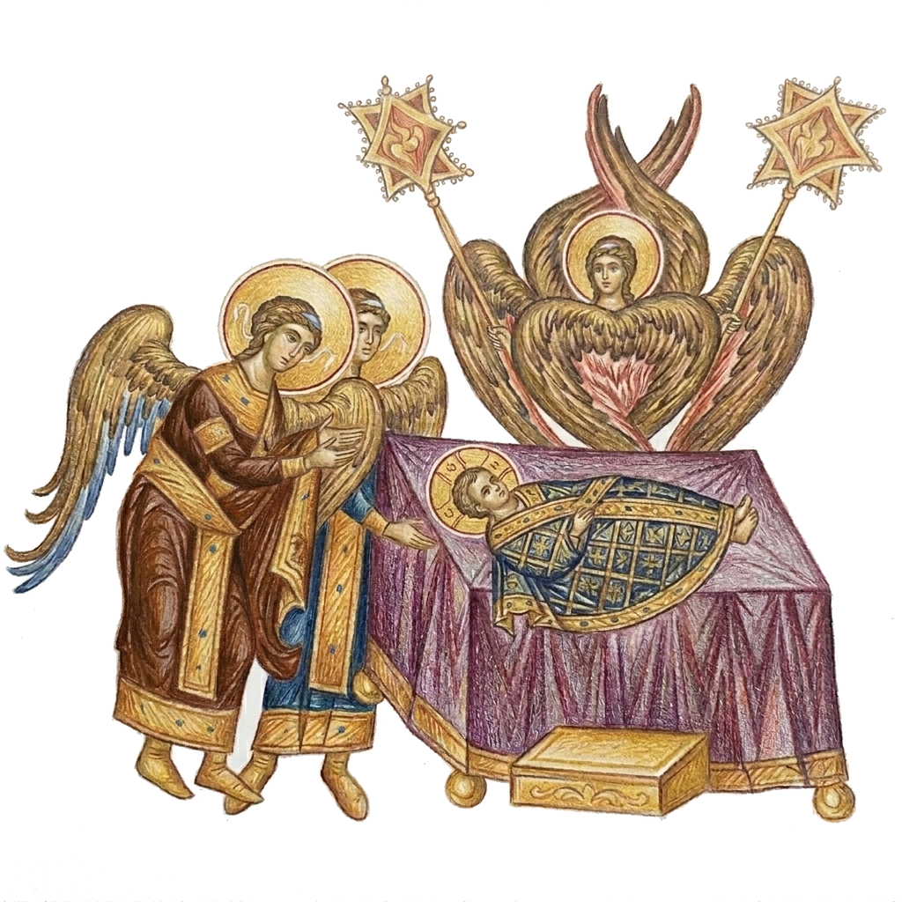
The Cherubim Hymn (first part)
People: Let us who mystically represent the Cherubim, and who sing the thrice-holy hymn to the life-creating Trinity, now lay aside all worldly cares,
The Prayer of the Cherubim Hymn
Priest: No one who is bound with the desires and pleasures of the flesh is worthy to approach or draw near or to serve Thee, O King of glory, for to minister to Thee is great and fearful even to the heavenly powers. Nevertheless through Thine unspeakable and boundless love for mankind, Thou didst become man, yet without change or alteration, and as Ruler of All didst become our High Priest, and didst commit to us the ministry of this liturgical and bloodless sacrifice. For Thou alone, O Lord our God, rulest over those in heaven and on earth; who art borne on the throne of the Cherubim; who art Lord of the Seraphim and King of Israel; who alone art holy and dost rest in the saints. Therefore, I entreat Thee who alone art good and ready to listen: Look down upon me, a sinner, Thine unprofitable servant, and cleanse
While the priest reads the prayer, the deacon, censes the Altar and the priest then goes before the Holy Doors and censes the icons and the people. While doing this, the deacon recites Psalm 50 (51).
my soul and my heart from an evil conscience; and by the power of Thy Holy Spirit enable me, who am endowed with the grace of this priesthood, to stand before this, Thy Holy Table, and perform the sacred mystery of Thy holy and pure Body and precious Blood. For I draw near unto Thee, and bowing my neck I implore Thee; Do not turn Thy face away from me, nor cast me out from among Thy children; but make me, Thy sinful and unworthy servant, worthy to offer gifts to Thee. For Thou art the Offerer and the Offered, the Receiver and the Received, O Christ our God, and to Thee we ascribe glory, together with Thy Father, who is from everlasting, and Thine all-holy, good, and life-creating Spirit, now and ever, and unto ages of ages. Amen.
Priest: Let us, who mystically represent the Cherubim, and who sing the thrice-holy hymn to the life-creating Trinity, now lay aside all worldly cares. (3 times)
Deacon: That we may receive the King of All, who comes invisibly upborne by the angelic hosts. Alleluia. Alleluia. Alleluia. (3 times)
Priest: ▶ O God, cleanse me, a sinner, and have mercy on me.
Deacon: ▶ Lift up, Master.
Priest: ▶ Lift up your hands to the holy place and bless the Lord.
When the prayer and the censing are completed, the priest and the deacon stand before the Altar and say the Cherubim Hymn three times. At the end of each they make a reverence.
They then go to the Prothesis Table and the priest censes the Holy Things, praying: ▶
Then the deacon says to the priest: ▶
The priest lifts the aer, (see below) lays it on the deacon’s left shoulder and says: ▶
Faithful
> Anaphora -The Eucharistic Prayer (Preface > Remembrance > Epiclesis > Intercession) >
> Litanies > Lord’s Prayer > Elevation > Fraction > Communion > Conclusion
The Aer:
The large covering cloth is called the aer, (or air) since the priest and deacon wave it above the Holy Gifts moving the air and because it covers the Holy Gifts as the air covers the earth. This waving of the aer represents the overshadowing of the Holy Gifts by the Holy Spirit. The aer placed on the gifts represents the grave of the Savior and symbolizes the closing of the tomb. Because of this, the aer is decorated with scenes of the taking down of the Body of Christ from the cross and His placement in the tomb.
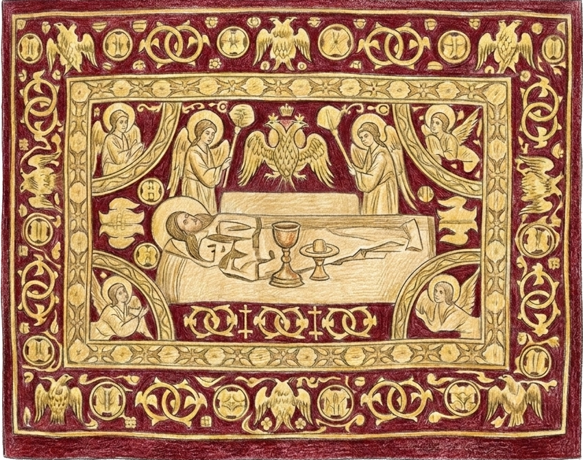
The Offertory (continued)
Thus in the procession of Offertory our very life is being brought to the Altar, presented to God in an act of love and adoration. True it is the ‘King of Kings and Lord of Lords who comes to be sacrificed’ (hymn of Offertory, Great Saturday), it is His Entrance as Priest and Oblation*; and yet, in Him and with Him, we also lay on the paten*, the members of His Body, the partakers of His Humanity. ‘Let us put aside all earthly cares,’ sings the choir; and, indeed, have not all our cares been assumed in this unique and ultimate Care that transfigures all our life – in this movement of love which brings us to the Source and the Giver and the Content of Life?
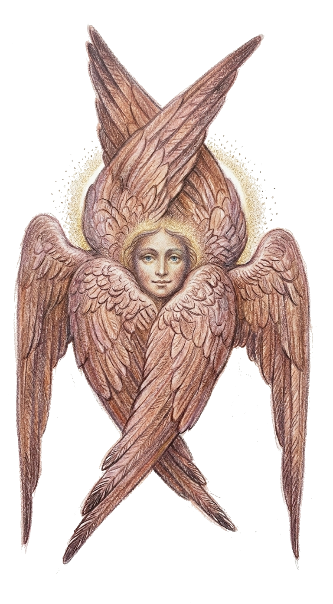
The Cherubim Hymn4
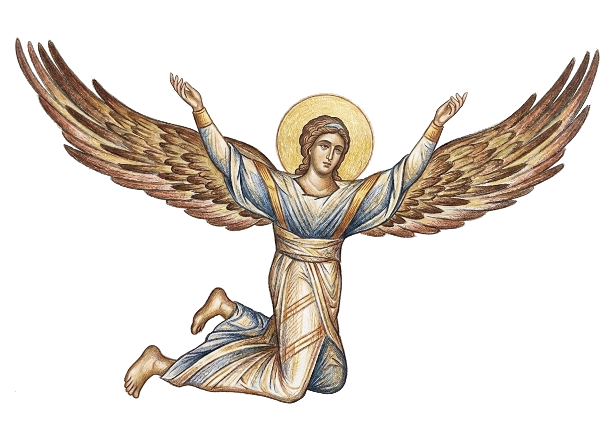
This hymn calls those present Christians, mystically representing the Cherubim (that is, comparing in some mystical way to the Cherubim and singing together with them the thrice-holy hymn to the Life-Creating Trinity) to lay aside all worldly cares. In other words, not thinking about property, glory, or pleasure but to worthily receive the King of all earthly and heavenly creatures with the honor paid to Him by the heavenly angelic hosts singing ‘Alleluia!’
This hymn began to be used in church services during the time of Emperor Justinian II (565-578). It was introduced into the Liturgy in order that during the time church officials brought the Gifts to the Altar from where they had been prepared, the faithful, by listening to this hymn, would be filled with the most holy thoughts and would be prepared to worthily receive the King of all.
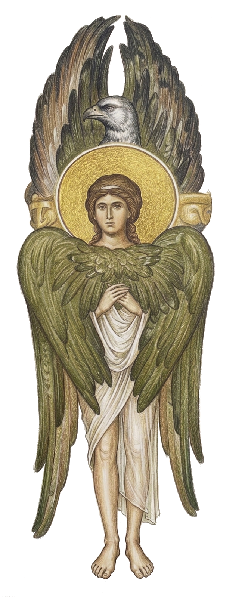
- Concerning Cherubim and Seraphim and other heavenly beings, see Genesis 3.24, I Samuel 4.4, II Samuel 6.2 and 22.11; and especially Ezekiel 10.1-22 and Isaiah 6.2-6.
The Cherubim Hymn (first part — continued from previous page)
People: Let us, who mystically represent the Cherubim and who sing the thrice-holy hymn to the life-creating Trinity, now lay aside all worldly cares.
After the priest places the aer on the deacon’s left shoulder, he takes the Holy Diskos and sets it on the deacon’s head with all reverence. The deacon meanwhile holds the censer with one finger of his right hand. The priest then takes the Chalice in his own hands.
After the people finish the Cherubim Hymn, the priest and deacon both go through the north door of the iconostasis preceded by candle bearers. As they make the procession toward the Holy Doors, they pray out loud: ▶
The Great Entrance
Deacon: ▶ All pious and Christ-loving people, the founders and benefactors of this holy temple, may the Lord remember in His kingdom, always, now and ever, and unto ages of ages.
Priest: Our Most Holy Patriarch, the priestly and monastic orders and all the clergy of the Church, may the Lord God remember in His kingdom always, now and ever, and unto ages of ages.
Priest: Our devout and Christ-loving Orthodox people, may the Lord God remember in His kingdom always, now and ever, and unto ages of ages.
Priest: All you Orthodox Christians, may the Lord God remember in His kingdom always, now and ever, and unto ages of ages.
The Cherubim Hymn (second part)
People: Amen. That we may receive the King of All, who comes invisibly upborne by the angelic hosts. Alleluia. Alleluia. Alleluia.
Deacon: ▶ Thy priesthood the Lord God remember in His kingdom always, now and ever, and unto ages of ages.
Priest: ▶ Thy deaconate the Lord God remember in His kingdom always, now and ever, and unto ages of ages.
The deacon enters through the Holy Doors and stands to the right as the priest enters. The deacon says to the priest: ▶
And the priest says to the deacon: ▶
Faithful
> Anaphora -The Eucharistic Prayer (Preface > Remembrance > Epiclesis > Intercession) >
> Litanies > Lord’s Prayer > Elevation > Fraction > Communion > Conclusion
History of the Great Entrance5
The Great Entrance is simply a development of the original transfer of the peoples’ gifts to the altar. In the early Church, the faithful brought gifts (prosphora) to the Eucharist gathering as a sign of sacrificially giving themselves to God in Christ. Upon entering the meeting place they gave their gifts to the deacon stationed by the entrance. All types of gifts were given, but of greatest importance to the liturgical service were the gifts of bread and wine. From these gifts the deacons selected as much as was needed for communion and when the time came for the eucharistic prayer the bread and wine were brought forward and placed on the table. In time, for various reasons both cultural and religious, this part of the liturgy became enriched…by the addition of an antiphon [the Cherubim Hymn and possibly Psalm 24.7-10], prayers, and other ceremonies. In the great churches, processions could include dozens of participants, including deacons carrying censers, rhipidia*, candles, the aer, and wash basins.
-
In the early Church, the transfer of gifts was done without any particular ceremony. St Justin the Martyr writing about 150 A.D. explains simply that “after finishing the prayers [of the faithful], we greet one another with a kiss. Then bread and a cup of water and mixed wine are brought to the one presiding over the brethren. He takes it, gives praise and glory to the Father of all in the name of the Son and Holy Ghost, and gives thanks at length for the gifts that we were worthy to receive from Him.”
As congregations grew and churches were built, separate facilities were created to receive the peoples’ offerings and to prepare the bread and wine for the Eucharist. The gifts were accepted and kept in the diaconicon (also known as the skeuophylakion or sacristy), where the deacons also kept archives, a library, vestments, and the church treasure. Local custom determined the location of the diaconicon: whether inside the church or attached to the narthex or in a separate structure. At Hagia Sophia it was located in a separate building at the north east corner of the main church. The procession taking the Gifts and everything necessary for the Eucharist from the skeuophylakion through the midst of the people in the nave and on to the sanctuary and altar became known as the Great Entrance.
The Great Entrance
“May the Lord God remember all of you in His Kingdom…” says the priest while approaching the Altar with the Gifts. The love, which Christ has ‘poured into our hearts’ (Romans 5.5) has its natural expression in the mutual love of Christians for each other. The Kingdom of God is that of perfect unity – ‘that they may be one, even as we are one’ (John 17.11). Therefore, there is no other way to approach God but in love. He remembers us if we remember each other. Whatever the number of those who offer this Eucharist, it is always the whole Church – the unity of faith and love – that offers and is being offered, and this organic unity of the Church is expressed in the commemoration at the Great Entrance.
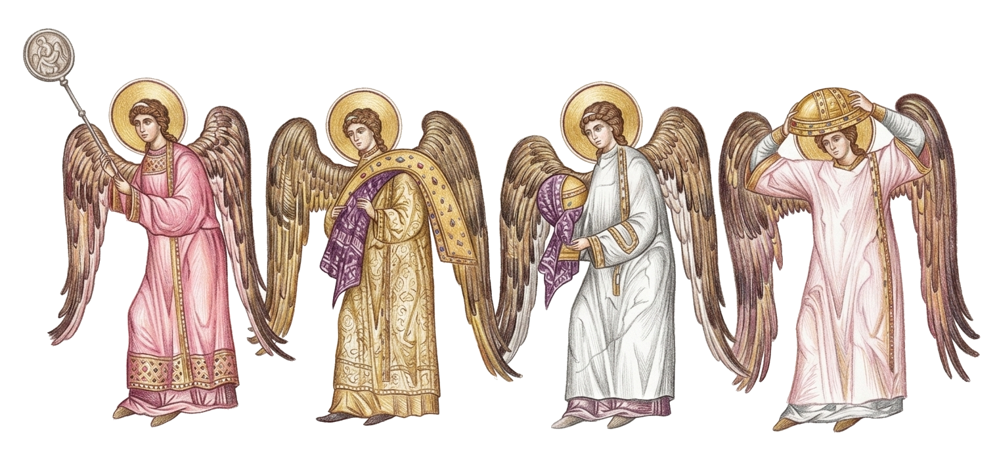
The Cherubic Hymn was originally chanted as one complete hymn, possibly as the antiphonal refrain to Psalm 24.7-10. During the Great Entrance, while the hymn was being sung, believers wanted to be remembered by God. In some cultures they would even fall down before the procession, forcing the ministers to step over them. This desire to be remembered at this particularly solemn point in the Liturgy led to dividing the Hymn into two parts so that between the two parts the deacon and the priest could pray out loud for the whole Church during the Great Entrance. Gradually, the practice arose of commemorating aloud the emperor and the patriarch if they were present at the liturgy. These commemorations were gradually multiplied to include other orders in the Church, but initially they were done silently unless those in question were actually present.
-
Later still the rite of preparation was moved to a space to the north of the altar – appropriately called the prothesis. It is from here – the table of the Prothesis – that the Great Entrance begins in its modern form.
see Robert F. Taft, S. J. The Great Entrance: A History of the Transfer of Gifts and other Preanaphoral Rites of the Liturgy of St John Chrysostom, 2nd ed. (Rome: Pont. Institutom Studiorum Orientalium, 1978).
The Cherubim Hymn (second part — continued from previous page)
People: That we may receive the King of All, who comes invisibly upborne by the angelic hosts. Alleluia.
Priest: ▶ The noble Joseph, when he had taken down Thy most pure Body from the tree, wrapped it in fine linen and anointed it with spices, and placed it in a new tomb.
In the tomb with the body and in hell with the soul, in paradise with the thief and on the throne with the Father and the Spirit wast Thou, O boundless Christ, filling all things.
Bearing life and more fruitful than paradise, brighter than any royal chamber: Thy tomb, O Christ is the fountain of our resurrection.
Priest: ▶ The noble Joseph, when he had taken down Thy most pure Body from the tree, wrapped it in fine linen and anointed it with spices, and placed it in a new tomb.
Priest: ▶ Do good to Zion in Thy good pleasure; rebuild the walls of Jerusalem. Then wilt Thou delight in right sacrifices, in burnt offerings and whole burnt offerings; then bulls will be offered on Thy altar.
Priest: ▶ Pray for me, my fellow-minister..
Deacon: ▶ May the Holy Spirit Himself minister together with us all the days of our life.
Deacon: ▶ Remember me, holy Master.
Priest: ▶ May the Lord God remember you in His Kingdom always, now and ever and unto ages of ages.
Deacon: Amen.
Then the priest sets the Holy Chalice on the Table, takes the Holy Diskos from the deacon’s head, and sets it on the Table also saying: ▶
The priest then takes the veils from the paten and chalice and places them on the altar, saying: ▶
And taking the censer from the deacon, the priest censes the Holy Things thrice, saying: ▶
He gives the censer back to the deacon, bows his head and says to the deacon: ▶
And the deacon says to him: ▶
And again the deacon asks the priest: ▶
And the priest prays: ▶
The deacon kisses the priest’s hand, goes out the north door, and stands before the Holy Doors to begin the Litany.
Faithful
> Anaphora -The Eucharistic Prayer (Preface > Remembrance > Epiclesis > Intercession) >
> Litanies > Lord’s Prayer > Elevation > Fraction > Communion > Conclusion
Symbolic Meaning of the Great Entrance
In the earliest celebration of the Eucharist, the transfer of the peoples’ gifts to the Altar was done without any particular ceremony. Upon arrival at the meeting, believers would give the deacon their gifts of bread and wine and at some point during the service the deacon would take these offerings and place them on the Altar. Between the fourth and the seventh centuries many parts of the Divine Liturgy were made more ceremonial, including this transfer of the gifts, which became known as the Great Entrance. During the latter part of this era, a new layer of ‘symbolic’ meaning
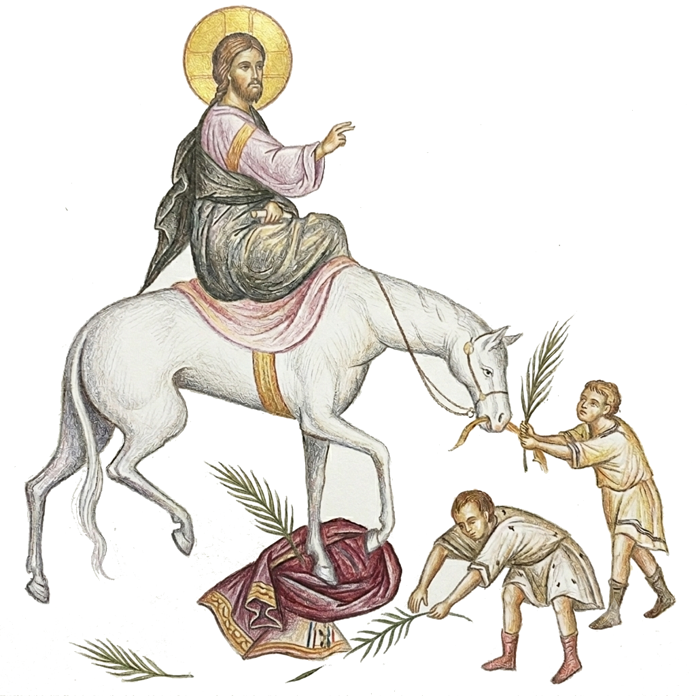
was also added to the whole Liturgy. As Taft explains: St Germanus (†A.D. 730) integrated another level of interpretation into Byzantine liturgical understanding; one that was equally rooted in the New Testament and also found, though far less prominently, in Maximus (†A.D. 630) and other earlier Byzantine liturgical writings. This was the interpretation of the Eucharist, not only as the anamnesis* [recalling] of, but also as the actual figure of salvation history in Jesus. Each part of the service was linked with particular events in the life, death, burial, and resurrection of Christ.
The transfer of the gifts from the Prothesis to the Holy Altar and the singing of the Cherubim Hymn are symbolic of Jesus Christ’s journey from Bethany to Jerusalem to endure His suffering and death. When He entered Jerusalem there were many people, including children, who offered songs in a visible way to Jesus as king and as one who triumphs over death. In a similar but spiritual way, the angels continually offer songs to the thrice-Holy Trinity and people now lift up the Cherubim Hymn to God.
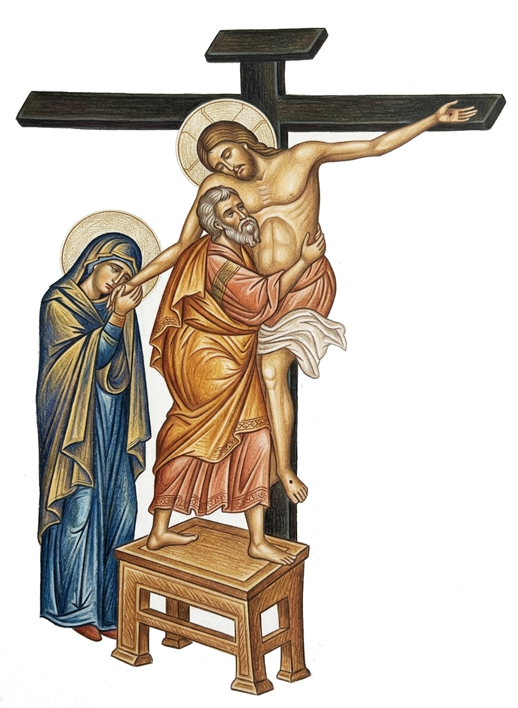
The placing of the Holy Gifts on the Altar represents the crucifixion of Christ, taking down His body from the cross, and His burial. This is seen in the prayers (troparion*) which are said when the Gifts are placed on the Holy Table. The Diskos* [paten] symbolizes the hands of Joseph and Nicodemus who took down the Immaculate Body of Christ from the cross, wrapped Him in clean burial cloths, and placed Him in the new tomb. The Chalice symbolizes the cup with the blood which flowed from Christ’s side, hands, and feet. The covering on the Diskos represents the cloth which was placed around His head, the covering on the Chalice represents the cloth in which His body was wrapped, and the aer represents the stone which Joseph placed on the entrance to the tomb. The incense represents the spices which were placed on the body of the Savior; and the Holy Altar and the Antimension represent the grave itself. Finally, the closed Holy Doors and the drawn curtain represent the door to the tomb which was securely closed by the soldiers and the seal. The Chalice is placed to the right of the diskos since the blood and water flowed from the right rib of the Savior.
Litanies after the Great Entrance and Confession of Faith and Love
Little Litany
Deacon: ▶ Let us complete our prayer unto the Lord.
People: Lord, have mercy.
Deacon: For the precious Gifts now offered, let us pray to the Lord.
People: Lord, have mercy.
Deacon: For this holy house, and for those who enter with faith, reverence, and the fear of God, let us pray to the Lord.
People: Lord, have mercy.
Deacon: For our deliverance from all affliction, wrath, danger, and necessity, let us pray to the Lord.
People: Lord, have mercy.
Deacon: Help us, save us, have mercy on us, and keep us, O God, by Thy grace.
People: Lord, have mercy.
The deacon, kisses the hand of the priest and goes out the north door and stands in his usual place and says: ▶
Litany of Supplication
Deacon: That the whole day may be perfect, holy, peaceful, and sinless, let us ask of the Lord.
People: Grant it, O Lord.
Deacon: An angel of peace, a faithful guide, a guardian of our souls and bodies, let us ask of the Lord.
People: Grant it, O Lord.
Deacon: Pardon and remission of our sins and transgressions, let us ask of the Lord.
People: Grant it, O Lord.
Deacon: All things that are good and profitable for our souls, and peace for the world, let us ask of the Lord.
People: Grant it, O Lord.
Deacon: That we may complete the remaining time of our life in peace and repentance, let us ask of the Lord.
People: Grant it, O Lord.
Deacon: A Christian ending to our life, painless, blameless, peaceful; and a good defense before the dread judgment seat of Christ, let us ask.
People: Grant it, O Lord.
Deacon: Commemorating our most holy, most pure, most blessed and glorious Lady, Theotokos and ever-virgin Mary with all the saints, let us commend ourselves and each other, and all our life unto Christ our God.
People: To Thee, O Lord.
Prayer of the Prothesis
Priest: ▶ O Lord God Almighty, who alone are holy, who acceptest the sacrifice of praise from those who call upon Thee with their whole heart. Accept also the prayer of us sinners, and bear it to Thy holy altar, enabling us to offer unto Thee gifts and spiritual sacrifices for our sins and for the errors of the people. Make us worthy to find grace in Thy sight, that our sacrifice may be acceptable unto Thee, and that the good spirit of Thy grace may dwell upon us and upon these Gifts here offered, and upon all Thy people. …
After placing the Holy Gifts on the Altar the priest prays silently: ▶
Priest: … Through the compassions of Thine only-begotten Son, with whom Thou art blessed, together with Thine all-holy, good, and life-creating Spirit, now and ever, and unto ages of ages.
People: Amen.
Faithful
> Anaphora -The Eucharistic Prayer (Preface > Remembrance > Epiclesis > Intercession) >
> Litanies > Lord’s Prayer > Elevation > Fraction > Communion > Conclusion
Prayer of the Prothesis
During this litany the priest prays: ‘O Lord God Almighty…’ This prayer is called the Prayer of Offering (or Prothesis) since the offering is repeated several times during the liturgy, three times in fact. During the first offering – at the Prothesis – the priest prays that the Lord God would bless the gifts which are offered…. During the second offering – which is done now – the priest prays that the Lord would enable him to offer the gifts and spiritual sacrifices to Him, make us worthy to find grace before Him, that our sacrifice would be acceptable, and that the good Spirit of God’s grace would rest on the clergy, on the gifts which have been placed on the altar and on the people. These two offerings are only preparations for sacrifice…. With the third offering, which is the greatest and fullest, after remembering Christ’s suffering and counting God’s good works, the priest proclaims, ‘Thine own of Thine own we offer unto Thee in behalf of all and for all,’ after which comes the actual sanctification of the Divine Gifts.
Litany of Supplication
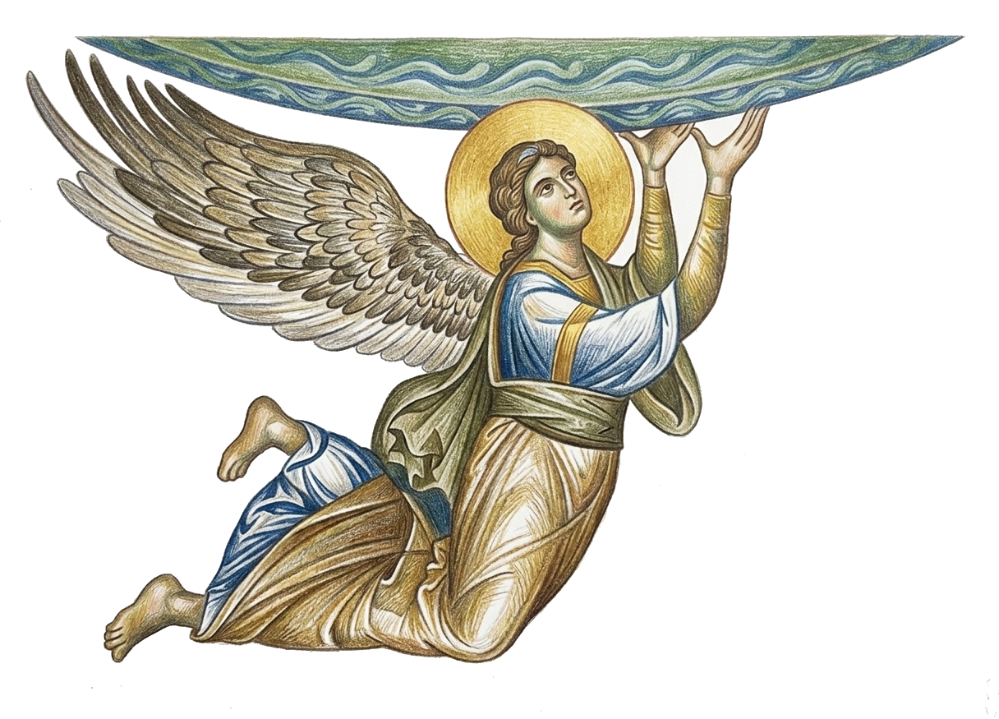
The “Angel of Peace” litany, or the αἰτήσεις (asking), is an ancient prayer said at various times in a variety of church services. In the Apostolic Constitutions (c. 380 A.D.) it is used as a concluding litany before the dismissal of the faithful at matins and vespers. St John Chrysostom refers to the prayer in his Homily 3 on the epistle to the Colossians: “For each believer has an Angel; since even from the beginning, every one of those that were approved had his Angel…. If then we have Angels, let us be sober, as though we were in the presence of tutors; for there is a demon present also. Therefore we pray, asking for the Angel of peace, and everywhere we ask for peace (for there is nothing equal to this); peace.”
Priest: Peace be unto all.
People: And to your spirit.
The Holy Kiss
Deacon: Let us love one another, that with one mind we may confess:
People: Father, Son, and Holy Spirit! The Trinity, one in essence, and undivided.
Priest: I will love Thee, O Lord, my strength. The Lord is my firm foundation, my refuge, and my deliverer. (thrice).
Priest: ▶ Holy God.
Priest: ▶ Holy Mighty.
Priest: ▶ Holy Immortal, have mercy on us.
Priest: ▶ Christ is in our midst.
Priest: ▶ He is and shall be.
The priest kisses the Holy Things which remain covered. First he kisses the top of the Diskos and says: ▶
then the top of the Chalice saying: ▶
then the edge of the Altar saying: ▶
If there are two or more priests, they all kiss the Holy Things and each other on the shoulder and the celebrant* says: ▶
And the one he kisses answers: ▶
The deacons, if there are two or three, kiss their oraria where the cross is depicted and kiss each other, saying just what the priests have said. The deacon, if there is only one, makes reverences and, standing in his place, kisses his orarion where the cross is depicted.
Faithful
> Anaphora -The Eucharistic Prayer (Preface > Remembrance > Epiclesis > Intercession) >
> Litanies > Lord’s Prayer > Elevation > Fraction > Communion > Conclusion
The Holy Kiss
The Kiss [or the Pax] here in the Liturgy is very ancient. Its use in the church can be explained by examining the Savior’s words in Matthew 5.23-24…
“Therefore if you bring your gift to the altar, and there remember that your brother has something against you, leave your gift there before the altar, and go your way. First be reconciled to your brother, and then come and offer your gift.”
To fulfill this commandment, the Holy Kiss, or Kiss of Peace, was exchanged not only between the clergy, but also between all Christians present at the service, the men with the men and the women with the women.6 In later times, it appears it was deemed necessary to curtail this practice among the laity because of various abuses of this truly Christian custom and limit it to only the clergy. Even though the Kiss of Peace is not practiced now among the people, when the words of the deacon are heard
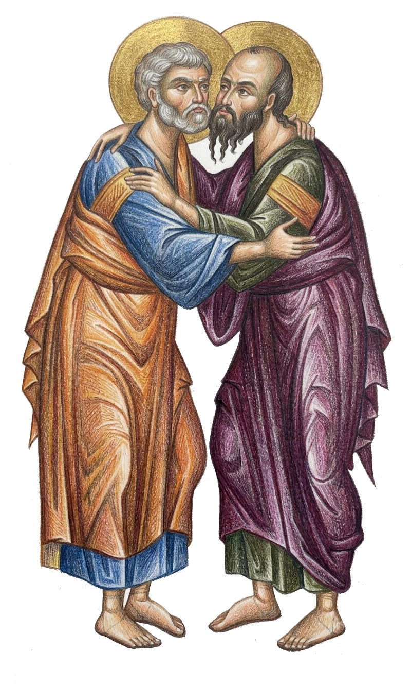
- Tertullian (c. 200) demonstrates that, at least in certain places, in the earliest Christian communities the opposite genders shared the kiss of peace, but by the time of the Apostolic Constitutions (c. 250) and Hippolytus (†c.235) men only greeted men with the kiss and women, other women. It was still being exchanged by the laity in the tenth century, but the custom had probably been curtailed by the thirteenth century. In Chrysostom’s day (fourth century), the kiss was given on the lips, but by the Middle Ages the practice began to develop for the clergy to exchange the kiss on the shoulders. See Taft, The Great Entrance, 389–398.
‘The doors, the doors! In wisdom let us attend,’ all should examine their souls to see if they truly love their neighbors, should forgive from the heart, and should grow in pure brotherly love with one another in Christ.
The Holy Kiss
The kiss was a sign of unity and fellowship from ancient times and is found throughout scripture. As a sign of unity, Paul tells the believers in Rome, Corinth, and Thessalonica all to ‘greet one another with a holy kiss’ (Rom 16.16, I Cor 16.20, II Cor 13.12, I Thess 5.26.) Peter also instructs believers to share the holy kiss. (I Peter 5.14) Jesus criticized Simon the Pharisee for not kissing Him when he invited Him to a meal. (St Luke 7.45) Judas’ treachery was made more hideous because he used the kiss of unity to betray his Master. (St Luke 22.48) Without any doubt, the kiss of peace was a vital part of the earliest celebrations of the Eucharist.
The Didache, probably written during the last half of the first century, during the time the New Testament books were being written, states that Christians should: Assemble on the Lord’s Day, and break bread and offer the Eucharist; but first make confession of your faults, so that your sacrifice may be a pure one. Anyone who has a difference with his fellow is not to take part with you until they have been reconciled, so as to avoid any profanation of your sacrifice…. The early church was so concerned that there be no divisions between the participants in the Eucharist that the bishops and presbyters held what amounted to church court early in the week so that disputes could be settled by Sunday. The Syrian Didascalia of the Apostles (probably written before 250 A.D.) states that let your judgments be held on the second day of the week, that if perchance any one should contest the sentence of your words, you may have space until the Sabbath to compose the matter, and may make peace between them on the Sunday.
The Doors!
Deacon: ▶ The doors! The doors! In wisdom, let us attend!
Nicene Creed
People:
I believe in one God, the Father almighty, Maker of heaven and earth, and of all things visible and invisible.
And in one Lord Jesus Christ, the Son of God, the only-begotten, begotten of the Father before all ages. Light of Light; true God of true God; begotten, not made; of one essence with the Father, by whom all things were made; who for us men and for our salvation came down from heaven, and was incarnate of the Holy Spirit of the Virgin Mary, and became man. And He was crucified for us under Pontius Pilate, and suffered, and was buried. And the third day He rose again, according to the Scriptures, and ascended into heaven, and sits at the right hand of the Father; and He shall come again with glory to judge the living and the dead; whose Kingdom shall have no end.
And in the Holy Spirit, the Lord, the Giver of Life, who proceeds from the Father; who with the Father and the Son together is worshiped and glorified; who spoke by the prophets.
In one Holy, Catholic, and Apostolic Church. I acknowledge one baptism for the remission of sins. I look for the resurrection of the dead. And the life of the world to come. Amen.
The deacon exclaims: ▶
The curtains are shut.
The priest lifts the aer and holds it over the Holy Gifts.7 If several priests are serving, then they lift the holy aer and hold it over the Holy Gifts and wave it saying to themselves the Confession of the Faith, as do the people.
(For the explanation of this waving see note 7)
Faithful
> Anaphora -The Eucharistic Prayer (Preface > Remembrance > Epiclesis > Intercession) >
> Litanies > Lord’s Prayer > Elevation > Fraction > Communion > Conclusion
Story From Church History
St Polycarp (69–155) was a disciple of St John the apostle and the bishop of Smyrna (on the west coast of what is now Turkey). During his lifetime, a controversy arose concerning the timing of Easter. Polycarp and the churches of Asia Minor celebrated Easter based on when the Jewish Passover occurred (on the 14th day of the Jewish month of Nisan) regardless of the day of the week on which it fell. Most other Christians remembered Christ’s death on Friday and His resurrection on Sunday.
Toward the end of his long life, Polycarp made a difficult trip to Rome and discussed the problem with Anicetus, the bishop of Rome. The two bishops discussed the issue at length, but neither one was able to convince the other. Polycarp said that he had personally learned this practice from St John while Anicetus said that he was following the practice of those who came before him in Rome. Instead of breaking fellowship with one another over the issue (as some did 50 years later), the two men decided that their unity and the unity of the church were more important than the timing of the Easter celebration. They agreed to disagree. As a sign of their unbroken fellowship, Anicetus gave Polycarp the honor of officiating a Eucharist at the Roman church where they assuredly exchanged the kiss of peace. Eusebius (340) states in his history of the Church that “they parted from each other in peace…maintaining the peace of the whole church.”
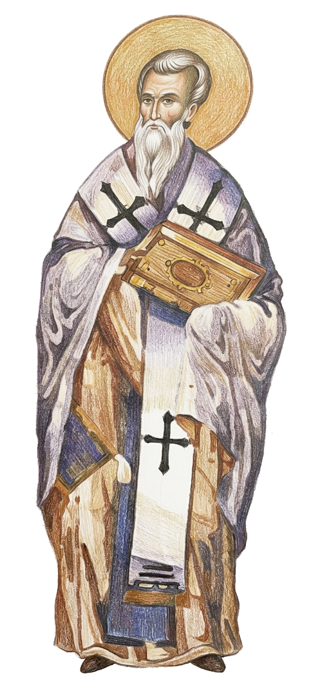
- “Before reciting the Creed, the priest uncovers the Holy Gifts since the confession of faith is done before the very face of Christ, whom Christians view uncovered. For this reason the priest waves the aer above the Holy Gifts. This waving of the aer represents overshadowing of the Gifts with power and grace by the Holy Spirit who is always present in the sacrament. Scripture itself describes His descent as a ‘rushing wind’ (Acts 2.2). For this reason the priest kisses the aer in a sign of the descent of the Holy Spirit and puts the aer to one side with the diskos cover. In a moment he will exclaim, ‘The grace of our Lord Jesus Christ, and the love of God the Father, and the communion of the Holy Spirit be with you all,’ which signifies the work of the Holy Spirit upon the Holy Gifts, which will come after the Creed.” Mirković, Pravoslavna Liturgika, 90.
The Doors!
In the ancient church, after dismissing the catechumens, the door keepers were told to stand by the men’s door, and the deaconesses by the women’s door. They were to keep the believers inside the church during the bloodless sacrifice and prevent all others from entering… The words ‘The doors, the doors!’ were intended for those people who were responsible for keeping the doors closed during the Liturgy…. When, in later times, the old discipline was relaxed and entrance into the church was not guarded with the original attention and strictness, the exclamation, ‘The doors, the doors!’ was not maintained simply as a reminder of old practices, but rather as a reminder for the believers to examine themselves to see if they were qualified to remain in the church…and to show that they were not only believers in name.
The Nicene Creed8
In the ancient church, the Nicene Creed was only read once a year, on Good Friday. The catechumens also recited it before their baptism. At the end of the fifth century (471) the Creed was introduced into the Liturgy at Antioch, and from the beginning of the sixth century in the whole eastern church, being officially made a part of the Liturgy in 511.
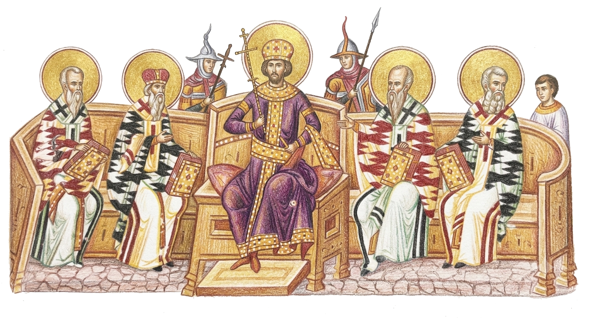
After expressing our unity of love, we express, in the Creed, our unity of faith. The unity of the Church is not a partial, limited, human unity (national, social, emotional, etc.). It is the unity of Truth: the divinely revealed, total, and absolute truth. The one who does not accept it, does not belong to the Church, for he has preferred something else to the Truth; he has blinded himself and is still the slave of the ‘old life’, with its errors, darkness, and sins. Of this Truth, the Creed is the confession and thus, criterion.
- Because of the danger to the church posed by heretics in the fourth century, the Holy Fathers wrote the Nicene Creed at the First Ecumenical Council held in Nicea in 325 and completed it at the Second Ecumenical Council in Constantinople in 381. This document set up the dogmatic foundation and canonical system for the Christian church. At the First Council, the teachings of the Alexandrian priest Arian was condemned. He had denied the unity of the Father and the Son. At this council the terminology was adopted stating that the Son is of one essence with the Father. The second council completed the Creed which we recite today.
The Anaphora — “The Offering Up”
The Preparation
Deacon: Let us stand aright! Let us stand with fear! Let us attend, that we may offer the Holy Oblation* in peace.
People: A mercy of peace! A sacrifice of praise!
Priest: The grace of our Lord Jesus Christ, the love of God the Father, and the communion of the Holy Spirit be with all of you.
People: And with your spirit.
Priest: Let us lift up our hearts.
People: We lift them up unto the Lord.
The priest takes the aer from off the Holy Things, kisses it, and lays it to one side.
The deacon makes a reverence, goes into the sanctuary and, taking a fan (rhipidia), devoutly fans the Holy Things. If there are no fans, he does this with one of the veils.
Faithful
> Anaphora -The Eucharistic Prayer (Preface > Remembrance > Epiclesis > Intercession) >
> Litanies > Lord’s Prayer > Elevation > Fraction > Communion > Conclusion
The Preparation
Let us stand aright…’ According to St John Chrysostom, this means that we stand as a man rightly stands before the Lord; that is, with fear and trembling and with an awakened and sober spirit. The choir answers with ‘A mercy of peace, a sacrifice of praise’ which signifies that the Holy Sacrifice is the greatest mercy to us from God, who made peace with mankind through the sacrifice of His only Son on the cross. It is also a Holy Sacrifice to God from us – a sacrifice of thanksgiving and praise to Him. But since we are not in ourselves capable of offering to God this most solemn sacrifice, the priest comes with a proclamation of God’s gifts. Turning to the west he blesses with the words of II Corinthians 13.14, ‘The grace of our Lord Jesus Christ, and the love of God the Father, and the communion of the Holy Spirit be with you all.’ This is an appeal for good things from each Person of the Holy Trinity: grace from the Son, love from the Father, and communion from the Holy Spirit. God’s Son, in His unbounded
mercy, redeemed us from the curse of the Law and became our Savior (Redeemer) thereby granting us grace. God the Father, through the death of His Son, made peace with mankind and accepted us again to Himself in love. The Holy Spirit came down visibly upon the apostles, and after this He invisibly comes down on each of us individually, and communes the gifts of God to us. The people respond to this call with ‘and with your spirit’ since the same gifts are needed by the priest who is serving.
Let us lift up our hearts!
Commenting on this part of the Divine Liturgy around 1350 A.D., Nicolas Cabasilas states: Having dignified us with such a prayer and thus raised our souls up from the earth, the priest raises our thoughts also, saying: ‘Let us lift up our hearts!’ – let us be heavenly minded, not earthly-minded. The faithful give their consent, and say that their hearts are where their treasure is – there where Christ is, who sits at the right hand of the Father. ‘We lift them up unto the Lord.’
Liturgical Fans (Rhipidia)9
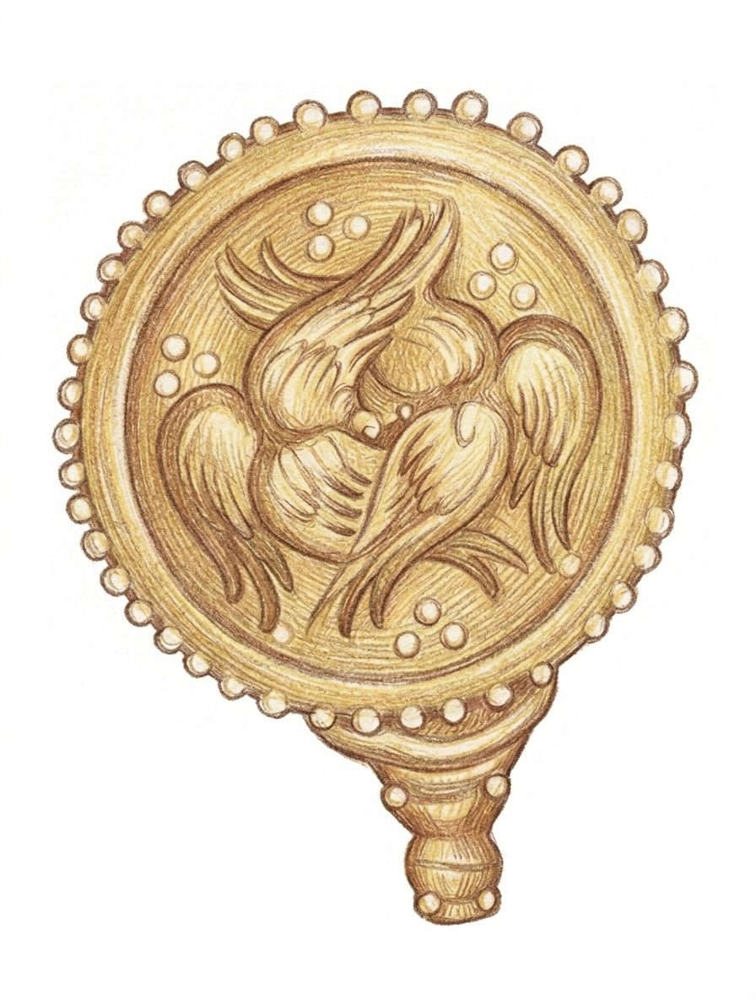
In the early Church, fans made of fine cloth or peacock’s feathers were waved over the Holy Bread and Chalice to keep them from being defiled by flies. Now they are generally made of metal in the shape of a disk and are decorated with six winged seraphim.
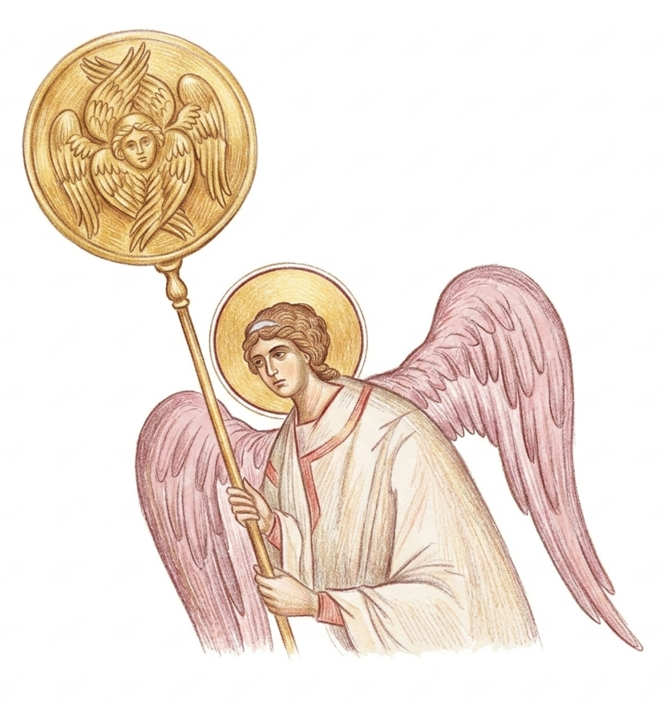
The Eucharistic Prayer was originally ‘the’ prayer, the only prayer in the whole rite, and it was there that the whole meaning of the rite had to be stated, if it was to be put into words at all in the course of the service. From the first century, the eucharistic prayer has been one of the four foundational “actions” of the communion service. These four actions are:
(1) THE OFFERTORY; bread and wine are ‘taken’ and placed on the table.
(2) THE EUCHARISTIC PRAYER; the one presiding gives thanks to God over bread and wine.
(3) THE FRACTION; the bread is broken.
(4) COMMUNION; the bread and wine are distributed.
All these actions were derived from the traditional Jewish meal which Christ shared with His disciples at the Last Supper. The prayer, our eucharistic “thanksgiving” prayer, developed from the prayer of blessing and thanksgiving which Jesus prayed and it always was recited at Jewish meals. “…the Lord Jesus in the night in which He was betrayed took bread; and when He had given thanks, He broke it…” (1 Cor. 11.23-24) This was a long prayer said by the host or father of the family in the name of all who had eaten the meal. It was a strict obligation on all male Jews after any food ‘not less than the size of an olive’ or ‘of an egg’. The modern eucharistic prayer is made of four parts: The Preface, Remembrance, Epiclesis, and Intercession.
What originated as the Jewish giving of thanks to God for the food which gives mortal life, became the Church’s giving of thanks for the Food which gives immortal Life – the Bread of Life - Christ Jesus Himself.
- Writing about 390 A.D, Bishop Theodore of Mopsuestia (NNW of Antioch) states; “Thus we may think of Him [Jesus] placed on the altar as if henceforth in sort of sepulcher, and as having already undergone the Passion. That is why the deacons who spread linens on the altar represent by this figure of the linen cloths of the burial…[And afterwards] they stand on both sides and fan the air above the Holy Body so that nothing will fall upon it. They show by this ritual the greatness of the Body lying there …which is holy, awe-inspiring, and far from all corruption…a Body that will soon rise to an immortal nature …[The deacons] stand around and wave their fans …because the Body lying there is truly Lord by its union with the divine nature.” Theodore of Mopsuestia Homily 15, 24 ff, ed. Tonneau-Devreesse, 503 ff. quoted from Taft, The Great Entrance, 35–36.
The Eucharistic Prayer
Priest: Let us give thanks unto the Lord.
People: It is meet and right [to worship the Father, and the Son, and the Holy Spirit: the Trinity, one in essence, and undivided.]
The Preface Prayer
Priest: ▶ It is meet and right to hymn Thee, to bless Thee, to praise Thee, to give thanks to Thee, and to worship Thee in every place of Thy dominion; for Thou art God ineffable*, inconceivable, invisible, incomprehensible, ever-existing and eternally the same, Thou and Thine only-begotten Son and Thy Holy Spirit. Thou it was who brought us from nonexistence into being, and when we had fallen away, didst raise us up again, and didst not cease to do all things until Thou hadst brought us up to heaven, and hadst endowed us with Thy Kingdom which is to come. For all these things we give thanks to Thee, and to Thine only-begotten Son, and to Thy Holy Spirit; for all things of which we know and of which we know not, whether manifest or unseen; and we thank Thee for this Liturgy which Thou hast designed to accept at our hands, though there stand by Thee thousands of archangels and hosts of angels, the Cherubim and the Seraphim, six-winged, many eyed, who soar aloft, borne on their pinions, …
The priest
prays
silently: ▶
Then the priest
exclaims out
loud: ▶
Priest: ▶ … singing the triumphal hymn shouting, proclaiming and saying:
The Sanctus
People: Holy! Holy! Holy! Lord of Sabaoth! Heaven and earth are full of Thy glory! Hosanna in the highest! Blessed is He that comes in the name of the Lord! Hosanna in the highest!
(Sabaoth is a Greek word derived from the Hebrew word צְבָא tsaba which means army / hosts.)
Faithful
> Anaphora -The Eucharistic Prayer (Preface > Remembrance > Epiclesis > Intercession) >
> Litanies > Lord’s Prayer > Elevation > Fraction > Communion > Conclusion
The Preface Prayer
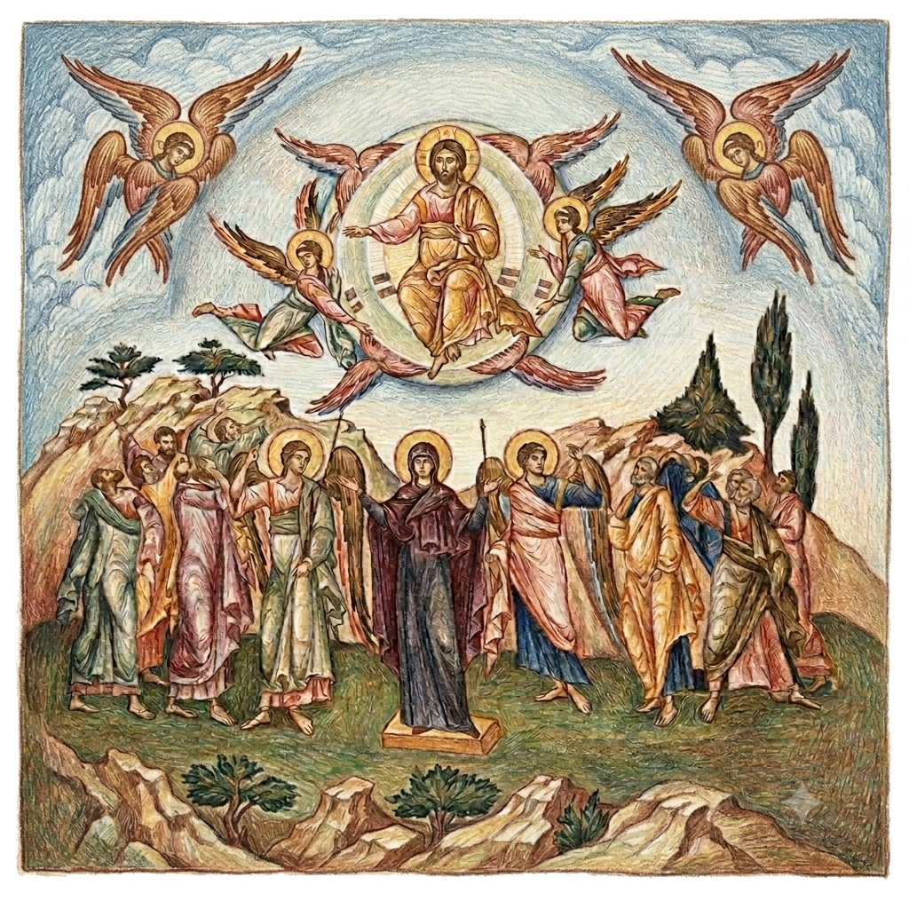
Let us lift up our hearts. We lift them up unto the Lord!” We have been moving constantly upwards, in the movement of Ascension. And here we are now, out of time, out of the world, in the glory of the “new aeon*,” in the ineffable* Presence of God. There is but one thing we can do, one reaction we can give to this Presence, one last and ultimate act: Let us give thanks unto the Lord. – Eucharistisomen!
When man stands before God, face to face, when he has been accepted into this Presence, when his sins are forgiven, and he has recovered his pristine beauty, the Eucharist, - thanksgiving, adoration, worship – is truly the ultimate and the total expression of his whole being. Man was created for Eucharist – for the pure love of God, for the sake of God, for the recognition of God as the content of his very life, as the Goal of all his goals, the Answer to all his questions, the Purpose of all his desires, the Object of all his knowledge, the Fulfillment of all his power and his thirst for love. Eucharist is the divine element, the Image
of God in us. But in sin, man has lost that pure Eucharist. He has directed his life, his love, his care towards other objects; he has become incapable of Eucharist, i.e. thanksgiving, which is the state of man in paradise.
But Eucharist was restored by Christ. His whole life was eucharistic – made of love and adoration, totally ordained to God. He offered Himself to His Father, a total, complete and pure Eucharist, the only one worthy of God. Therefore, there is no other Eucharist by Christ’s and there is no other Eucharist but Christ. And, once more, we are given it, we are united to it, it has become our Eucharist, because we are His Body, we are of ‘His bones and of His flesh.’ He assumed our humanity and offered His Eucharist on behalf of all and for all, making us – sinful and unworthy as we are – partakers of it.
The Sanctus
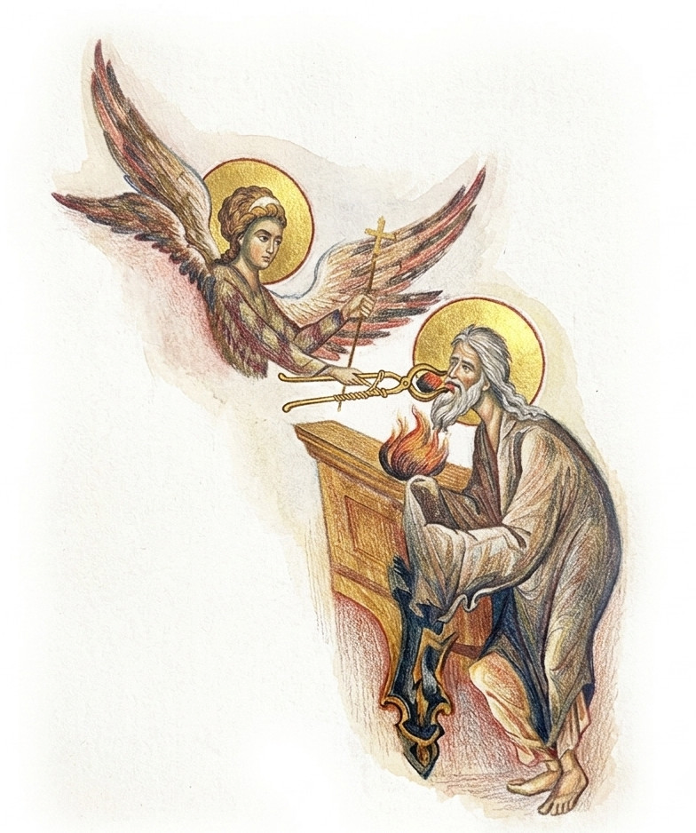
T“hough there stand by Thee thousands of archangels and hosts of angels …Singing the triumphal hymn, shouting, proclaiming, and saying: Holy! Holy! Holy!…” this is the Sanctus, the hymn which the angels eternally sing before the Throne of God (Isaiah 6). Its singing within the eucharistic prayer signifies the heavenly character of the Eucharist, means that the Church has ascended with Christ and offers His Eucharist in the new aeon*” of the Kingdom. We sing the angelic hymn because we stand with the angels and ‘angels’ mean heaven, the Presence of God and His ineffable* glory. The supreme, the highest point of the service has now been reached; that of the total Ascension, the complete acceptance of the Church into the heavenly Sanctuary. The movement of Sacrifice and adoration has reached its fulfillment.
… [The seraphim] cried to another and said: “Holy, holy, holy is the LORD of hosts; The whole earth is full of His glory!” … So I [Isaiah] said: “Woe is me, for I am undone! Because I am a man of unclean lips, and I dwell in the midst of a people of unclean lips;
For my eyes have seen the King, the LORD of hosts.” Then one of the seraphim flew to me, having in his hand a live coal which he had taken with the tongs from the altar. And he touched my mouth with it, and said: “Behold, this has touched your lips; your iniquity is taken away, and your sin purged.”
Isaiah. 6.2-8
-
This is one of four Old Testament scenes in the pendentives of the south dome of the narthex of the Hilandar Monastery on Mt. Athos. In the painting, Isaiah is shown bowing before the seraph who touches his lips with the burning coal. The prophet covers both of his hands as a sign of humble respect. Interestingly, the seraph uses a spoon to place the coal to Isaiah’s lips instead of tongs mentioned in the scripture. The altar is depicted in the background.
The Remembrance
People: Holy! Holy! Holy! Lord of Sabaoth! Heaven and earth are full of Thy glory! Hosanna in the highest! Blessed is He that comes in the name of the Lord! Hosanna in the highest!
Priest: ▶ With these blessed powers, O Master who lovest mankind, we also cry aloud and say: Holy art Thou and all-holy, Thou and Thine only-begotten Son and Thy Holy Spirit! Holy art Thou and all-holy and magnificent is Thy glory! Who hast so loved Thy world as to give Thine only-begotten Son, that whoever believes in Him should not perish but have everlasting life; who when He had come and had fulfilled all the dispensation for us, in the night in which He was given up – or rather, gave Himself up for the life of the world – took bread in His holy, pure, and blameless hands; and when He had given thanks and blessed it, and hallowed it, and broken it, He gave it to His holy disciples and apostles saying: …
Priest: ▶ …Take! Eat! This is my Body which is broken for you, for the remission of sins.
People: Amen.
Priest: ▶ And likewise, after supper, He took the cup, saying: …
Priest: ▶ …Drink of it, all of you! This is my Blood of the New Testament, which is shed for you and for many, for the remission of sins!
People: Amen.
The priest bows
his head and prays
silently: ▶
The deacon takes the
Star from the Holy
Diskos and makes
the sign of the cross
above it, and having
kissed it he lays it to
one side.
The priest then
exclaims: ▶
The priest prays
silently: ▶
then exclaims
out loud: ▶
Faithful
> Anaphora -The Eucharistic Prayer (Preface > Remembrance > Epiclesis > Intercession) >
> Litanies > Lord’s Prayer > Elevation > Fraction > Communion > Conclusion
The Remembrance
The eucharistic prayer, after it has resounded with the glorious sound of the Sanctus, becomes now remembrance (anamnesis*) of Christ – of His coming to us (…Who when He had come…) and of the fulfillment in Him of the whole purpose of salvation (…and had fulfilled all the dispensation for us …). His Life, His Death, His Resurrection, one movement of sacrifice, of love, of dedication to His Father and to men – this is of the inexhaustible content of our remembrance. All this is our Eucharist which we “show forth” before God, which we “remember” before Him.
And then we come to the last night, to Christ’s last supper with those “whom He loved unto the end.” On that night in which He was given up…, He set up the Act, the Rite, the Sign, by which His unique and all-including Eucharist — His own perfect Life, His own perfect Sacrifice, His own perfect Victory — would eternally be given to us, become ours, as our life in Him. At the solemn Passover meal…He took the bread and gave it to His disciples saying, ‘This is my Body’ and the chalice, ‘Drink of it, all of you! This is my Blood’ and finally, ‘Do this in remembrance
-
Isaiah’s vision has been interpreted as a prefiguration of the Incarnation of Christ and the salvation of man. In church literature, Mary’s role in the Incarnation is likened to the tongs which held the seraph’s burning coal. In the same way that Mary’s womb and hands held Christ, so also the tongs held the purifying burning coal which brought the forgiveness of sins. This Old Testament event is also interpreted as a prefiguration of the Eucharist. The burning coal taken from the altar took away Isaiah’s sins when it touched his mouth. In the same way, Christ’s sacrificial work on the cross takes away the sin of man when man, in faith, receives his sacrifice. The eucharistic symbolism in the painting is stressed by the fact that the seraph uses a eucharistic spoon to carry the burning coal which cleans Isaiah’s lips. The spoon is identical with that used in a nearby painting depicting St Zosimus administering the Eucharist to St Mary of Egypt.
(anamnesis*) of Me.’ (1 Cor. 11.24). And this means: ‘What I have done alone, I give it now to you – the perfect Eucharist of my Life, my Humanity totally deified. The food which we now eat together in unity of love, let it become your participation in my Body and Blood, in my sacrifice, in my Victory…’
Food is always the gift of God for it is a gift of life, and all life comes from God. Food is always and essentially “sacramental”, for through our “communion to it,” it is always transformed into man’s body and blood, into his life. But now this Sacrament is fulfilled, attaining its new and ultimate meaning. It becomes the gift of New Life, the one which Christ achieved personally and which, in His love for us, He gives to us. There is no life without food, there is no new life without new food, and this new life being the life of Christ, it is Christ Himself that becomes the gift of food.
‘There is no life without food, there is no new life without new food; it is Christ Himself that becomes the gift of food.’

“Unless you eat the flesh of the Son of Man and drink His blood, you have no life in you.” St John 6.53
Although the priest “clothed in the priesthood of Christ” offers the eucharistic sacrifice to God …, he is acting not only for the congregation present but also with them, thus forming the fullness of the Church. The people of God, the “fruit of whose lips” the priest sets forth as a sacrifice of praise, are just as essential for the Eucharist as the priest.
The worshipping Church thus really represents (makes present, actualizes) the whole Christ: the Head and the Body, the Divine and the Human, the Gift and its Acceptance; and the Orthodox Church, as expressed in her liturgy, is neither clerical (the clergy being the only active element, and laity the passive one) nor egalitarian (which implies that there is a confusion between clergy and laity…).
The Consecration
People:
Amen.
Priest: Remembering this saving commandment and all those things which have come to pass for us; the Cross, the Tomb, the Resurrection on the third day, the Ascension into heaven, the Sitting at the right hand, and the second and glorious Coming…
The Elevation of the Gifts
During this time the deacon, or the priest if there is no deacon, crosses his arms with the right above the left, and in his right hand holds the Holy Diskos, and in his left the Holy Chalice. He elevates them and makes the sign of the cross with them.
At the same time the priest exclaims: ▶
Priest: ▶ …Thine own of Thine own we offer unto Thee, on behalf of all and for all.
The Prayer of the Epiclesis
(Invocation of the Holy Spirit)
People: We praise Thee. We bless Thee. We give thanks unto Thee, O Lord. And we pray unto Thee, Our God.
[And we pray unto Thee, Our God. And we pray unto Thee, Our God.]
And we pray unto Thee, Our God.]
Priest: ▶ Again we offer unto Thee this reasonable and bloodless worship, and ask Thee, and pray Thee, and supplicate Thee: Send down Thy Holy Spirit upon us and upon these Gifts here offered.
Priest: ▶ O Lord, who didst send down Thy Most Holy Spirit upon Thine apostles at the third hour: Take Him not from us, O Good One, but renew Him in us who pray to Thee.
Deacon: Create in me a clean heart, O God, and put a new and right spirit within me.
Priest: O Lord, who didst send down… (same as above)
Deacon: Cast me not away from Thy presence, and take not Thy Holy Spirit from me.
Priest: O Lord, who didst send down… (same as above)
Deacon: ▶ Bless, Master, the Holy Bread.
Priest: ▶ And make this Bread the precious Body of Thy Christ.
Deacon: Amen.
Deacon: ▶ Bless, Master, the Holy Cup.
Priest: ▶ And that which is in this Cup, the precious Blood of Thy Christ.
Deacon: Amen.
Deacon: ▶ Bless both, Master.
Priest: ▶ Making the change by Thy Holy Spirit.
Deacon: Amen. Amen. Amen.
Deacon: ▶ Remember me, a sinner, holy Master.
Priest: May the Lord God remember you in His Kingdom always, now and ever and unto ages of ages.
Deacon: Amen.
The priest bows his head and prays silently: ▶
The deacon goes closer to the priest and both bow three times toward the altar and pray to themselves.
The priest then prays with raised hands: ▶
The deacon bows his head and with his orar and points to the paten* and says quietly: ▶
The priest blesses the Holy Bread with the sign of the Cross and says: ▶
The deacon points to the chalice with his orar and says: ▶
The priest blesses the Holy Cup with the sign of the Cross and says: ▶
The deacon again points to both and says: ▶
The Priest blesses both with the sign of the Cross and says: ▶
The deacon bows his head to the priest and says: ▶
Faithful
> Anaphora -The Eucharistic Prayer (Preface > Remembrance > Epiclesis > Intercession) >
> Litanies > Lord’s Prayer > Elevation > Fraction > Communion > Conclusion
The Consecration
The sign of this acceptance and fulfillment is the Consecration. The eucharistic movement upwards ends with the Elevation of the Gifts by the priest: Thine own of Thine own we offer unto Thee…and the Prayer of the Epiclesis (invocation of the Holy Spirit), in which we ask God to send down His Holy Spirit and make this Bread the precious Body of Thy Christ. And the wine in the chalice - the precious Blood of Thy Christ, transforming them, Making the change by Thy Holy Spirit….
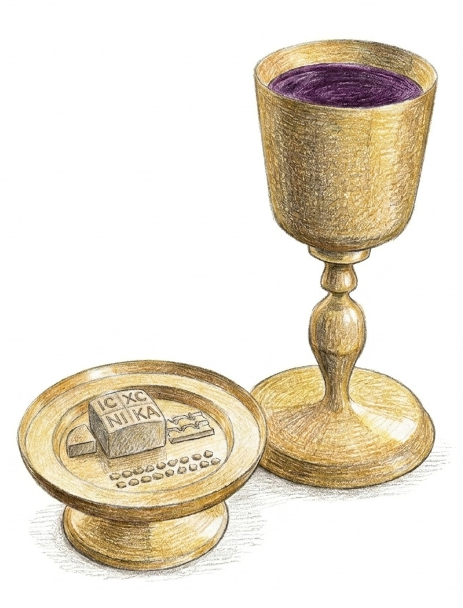
The transformation of the elements into the Body and the Blood of Christ takes place on the heavenly altar, in the Kingdom of God, which is beyond time and the ‘laws’ of ‘this world.’ This transformation is itself the fruit of Christ’s Ascension and of the Church’s participation in His Ascension, in His new life. All attempts to ‘explain’ what happens in the Eucharist in terms of ‘substance’ and ‘accidents’ (the western doctrine of transubstantiation, unfortunately taught sometimes as an Orthodox one) or in terms of time (the ‘moment of transformation’) are inadequate and futile precisely because they apply to the Eucharist the categories of ‘this world’ while its very essence is in transcending these categories, in introducing us into the dimensions and the reality of the new age. This (the transformation) happens not because of some strange and miraculous power left by Christ with some people (priests) and who therefore can perform this miracle by virtue of their power, but because we – the Church – are in Christ, i.e. in His Sacrifice, Love, Ascension, in the whole of His movement of deification, of transforming His Humanity by His Divinity; because, in other words, we are in His Eucharist and offer Him as our Eucharist to God.
The mystery of the eucharistic transformation is thus the mystery of the Church herself, of her belonging to the new age and the new life – in the Holy Spirit.
And when we do this, as He told us we should, we – the Church – are accepted where He has entered. And being accepted, we eat and drink at His Table in His Kingdom” (St Luke 22.30) as He said we would. Since the Kingdom is He Himself, the Divine Life communicated to us at this Heavenly banquet, we receive Him as the new food of our new life.
For ‘this world’ for which the Kingdom of God is yet to come, for its ‘objective categories,’ the Bread remains bread and the Wine remains wine. But in the wonderful and transfigured reality of the Kingdom, revealed and manifested in the Church they are verily and totally the very Body and the very Blood of Christ.
The Intercession
People: … And we pray unto Thee, Our God. (repeated from page 68)
Priest: ▶ That they may be to those who partake for the purification of soul, for the remission of sins, for the communion of Thy Holy Spirit, for the fulfillment of the Kingdom of Heaven, for boldness towards Thee, and not for judgment or condemnation. Again we offer unto Thee this reasonable worship for those who have fallen asleep in the faith: ancestors, fathers, patriarchs, prophets, apostles, preachers, evangelists, martyrs, confessors, ascetics, and every righteous spirit made perfect in faith. …
The priest makes a low bow before the altar and continues praying: ▶
The priest then exclaims out loud: ▶
Priest: ▶ … Especially for our most holy, most pure, most blessed and glorious Lady Theotokos and ever-virgin Mary. …
The Hymn to the Theotokos
(On certain Feast Days this is replaced by another hymn.)
People: It is truly meet to bless you, O Theotokos, ever-blessed and most pure, and the Mother of our God. More honorable than the Cherubim and more glorious beyond compare than the Seraphim: without defilement you gave birth to God the Word: true Theotokos, we magnify you.
Priest: … For the holy Prophet, Forerunner, and Baptist John; the holy glorious, and all laudable apostles; Saint (saint of the day) whom we commemorate today; and all Thy saints, at whose supplication look down upon us, O God. Remember all those who have fallen asleep before us in the hope of resurrection to eternal life, especially (he remembers by name whom he will of those who have fallen asleep); grant them rest, O God, where the light of Thy countenance shines on them.
The deacon censes the altar round about, and he remembers whom he will of the living and the dead.
Faithful
> Anaphora -The Eucharistic Prayer (Preface > Remembrance > Epiclesis > Intercession) >
> Litanies > Lord’s Prayer > Elevation > Fraction > Communion > Conclusion
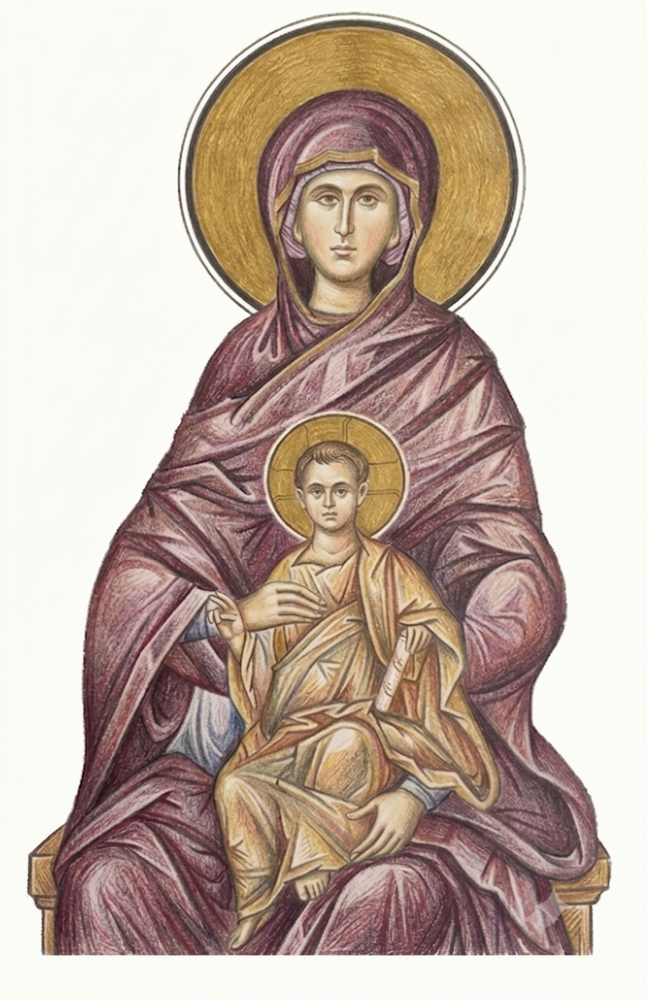
Theotokos
The title, Mother of God, took on a great importance in the fourth century, when a heretic named Nestorius – a man who held high office in the Church – claimed the one in Mary’s womb was certainly man, but that He was not God. Orthodox Christians, with one accord, said ‘Wrong!’ …for unless the One in Mary’s womb was and is God, we are dead in our sins. To safeguard the full deity of Christ, the Church has always insisted that Mary be rightly called – as Elizabeth discerned her to be (St Luke 1.43) – the Mother of God. This title, of course, does not mean mother of the Holy Trinity, for the Holy Trinity has no mother. Neither does it mean she originated the Person who is God the Son, for He exists before all time. It refers instead to Mary being the God-bearer (Theotokos in Greek), Mother of the eternal Son of God, who assumed full humanity in her womb.
The Intercession
Now we stand before the Gift and we prepare ourselves for…communion. There remains, however, one last and necessary act: Intercession. Christ eternally intercedes for the whole world.…To partake of Him necessarily means that we also are filled with the same love, and accept, as His Church, His ministry of Intercession. This intercession embraces the whole creation. Standing before the Lamb of God, who takes away the sins of the world, we first commemorate the Mother of God, St John the Baptist, the Apostles, the Martyrs and the Saints – the innumerable witnesses of the new life in Christ. We intercede for them not because they need our intercession, but because Christ, in Whom we intercede, is their Life, their Priest, and their Glory.
The Church is not divided into two parts, the ‘heavenly’ and the ‘earthly. She is one body and whatever she does, she does on behalf of the whole Body and for the whole Body. The act of intercession thus is not only an act of expiation*; it is also glorification of God, ‘wonderful in His Saints,’ and communion with the Saints. We begin our prayer of intercession by mentioning the Mother of God and the Saints because the presence of Christ is also their presence, and the Eucharist is the supreme revelation of the “communion of Saints,” of the unity and interdependence of all the members of the Body of Christ.
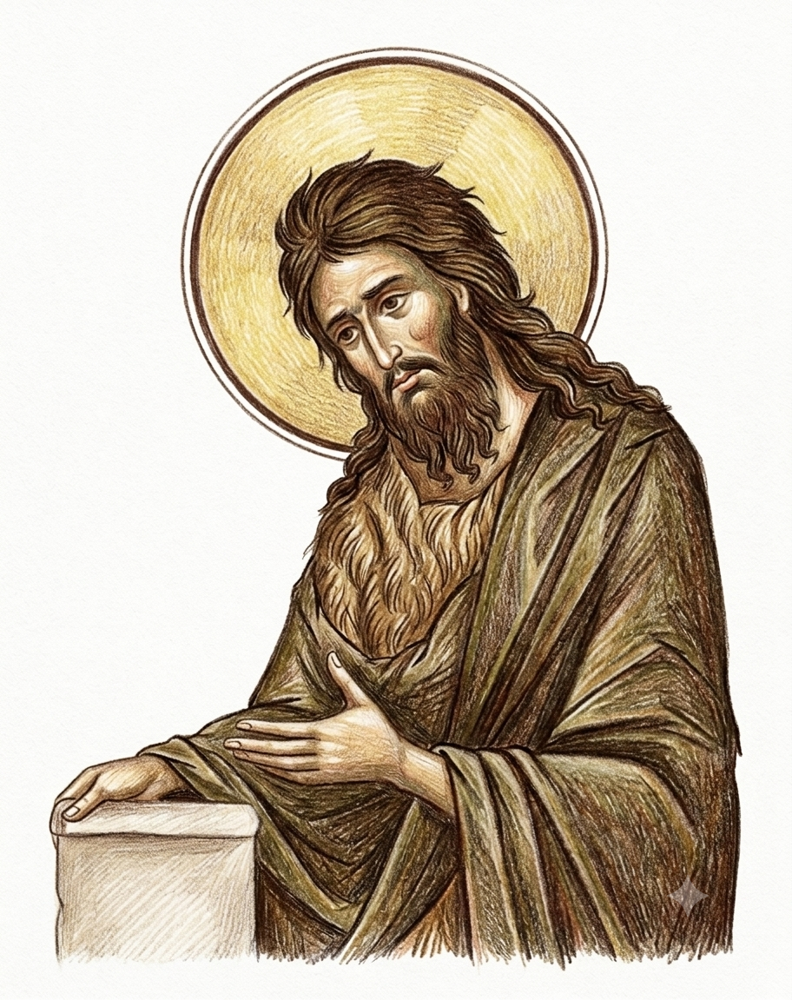
…The Eucharist transcends the hopeless difference between the ‘living’ and the ‘dead’ because it transcends the limits between this age and the age to come. On the one hand, we all ‘are dead and our life is hid with Christ in God’ (Col 3.3), yet, on the other hand we all live, because Christ’s life has been granted to us in the Church. The departed members of the Church are not mere ‘objects’ of our prayer, but, through their membership in the Church ‘actualized’ in the Eucharist, they are alive, and pray, and offer and receive with us.
The Hymn to the Theotokos
Mary to us is the Mother of God and thus the best, the ultimate, the perfect fruit of mankind. She is the one in whom we know what God wanted when He created human beings.
Why in Mary’s own words, shall ‘all generations call me blessed’? Because in her love and obedience, in her faith and humility, she accepted to be what from all eternity all creation was meant and created to be: the temple of the Holy Spirit, the humanity of God. She accepted to give her body and blood – that is, her whole life – to be the body and blood of the Son of God, to be mother in the fullest and deepest sense of this world, giving her life to the Other and fulfilling her life in Him. …the whole creation rejoices in her, because it recognizes through her that the end and fulfillment of all life, of all love is to accept Christ, to give Him life in ourselves.
The Intercession(Continued)
The Hymn to the Theotokos
(continued)
(On certain Feast Days this is replaced by another hymn.)
People: It is truly meet to bless you, O Theotokos....
Priest: Again we entreat Thee; remember, O Lord, all the Orthodox Episcopate, who rightly teach the word of Thy truth; all the priests, the deacons in Christ, and every order of the clergy.
Again we offer unto Thee this reasonable worship: for the whole world; for the Holy, Catholic, and Apostolic Church; for those who live in chastity and holiness of life; for all civil authorities; grant them, O Lord, peaceful times, that we, in their tranquility, may lead a calm and peaceful life in all godliness and sanctity....
Priest: …Among the first, remember, O Lord, His Beatitude, our Metropolitan (name), his Grace, our Bishop (name). Grant them for Thy holy churches in peace, safety, honor, health, and length of days, rightly to divide* the word of Thy truth. ...
People: And all mankind.
Priest: … Remember, O Lord, the city in which we dwell, every city and country; those who in faith dwell in them. Remember O Lord, travelers by land, by sea, and by air; the sick and the suffering; captives, and their salvation, Remember, O Lord, those who bring offerings and do good in Thy holy churches; those who remember the poor; and upon us all send forth Thy mercies....
The deacon
remembers
the living.
The priest
exclaims out
loud: ▶
The priest
turns
toward the
people and
blesses
them: ▶
Priest: ▶ …And grant that with one mouth and one heart we may praise Thine all honorable and majestic name: of the Father, and of the Son, and of the Holy Spirit, now and ever and unto ages of ages.
People: Amen.
Blessing
Priest: ▶ And the mercies of our great God and Savior Jesus Christ shall be with all of you.
People: And with your spirit.
Faithful
> Anaphora -The Eucharistic Prayer (Preface > Remembrance > Epiclesis > Intercession) >
> Litanies > Lord’s Prayer > Elevation > Fraction > Communion > Conclusion
The Intercession (Continued)
For the Holy, Catholic, and Apostolic Church; …for all civil authorities …: for all people, for all needs, for all conditions. …the gift of Divine Love which makes us realize, be it only for a few minutes and partially, the prayer of Christ, the love of Christ. We understand that the only real sin, and the root of all sin, is selfishness, and the Liturgy… reveals to us that true religion is, above everything else, this new and wonderful possibility to intercede and pray for the other, for all. In this sense, the Eucharist is indeed a sacrifice offered on behalf of all and for all, and the Prayer of Intercession is its ‘logical’ and ‘necessary’ conclusion.
Prayer for the Church
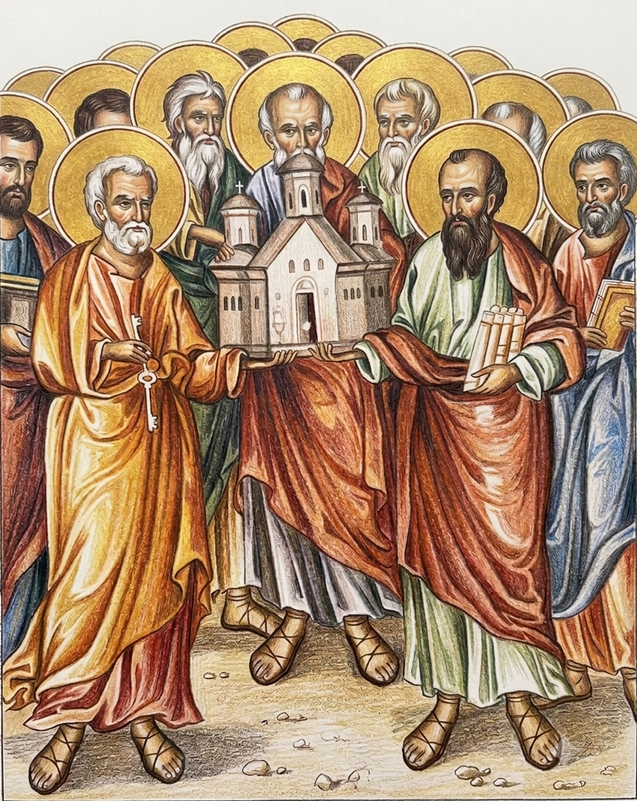
Among the first, remember, O Lord… our Bishop….” When we pray for the Bishop, we pray for the real “welfare” of the Church, for her abiding in Divine Truth: that the Church may be the Church – the Presence of God, His Healing Power, His Love, His Truth – and not, as it so often happens, a selfish, self-centered community defending its own human ‘interest’ instead of the Divine purpose for which it exists. The Church so easily becomes an ‘institution,’ a ‘bureaucracy,’ a ‘money-raising’ group, a ‘nationalism,’ a ‘social gathering,’… How often people who “hunger and thirst after righteousness” do not see Christ in the Church, but see in it merely human pride and arrogance, selfishness and the spirit of ‘this world.’ Of all this the Eucharist is judgment and condemnation. …it is not mere belonging to the Church that saves, for there is no magic in Christianity, but the acceptance of the Spirit of Christ. And this spirit judges not only individuals but also congregations, parishes, diocese. A parish as a human institution can easily replace Christ with something else: the worldly spirit of success, of human pride and human ‘achievements.’ The temptation is always present and ‘tempting.’ But then, the one whose sacred duty is always to minister the ‘Word of Truth,’ must remind the parish that it is being tempted, must condemn, in the name of Christ, all that is not compatible with the Spirit of Christ. It is for this courage and wisdom, love and faith fullness of the clergy, that we pray in the Prayer of Intercession.
And grant that with one mouth and one heart we may praise Thine all honorable and majestic name:…one mouth, one heart, one redeemed humanity restored in love and knowledge of God – such is the end, the goal of the Liturgy, the fruit of the Eucharist. And the mercies of our great God and Savior Jesus Christ shall be with all of you. This is the achievement of the ‘second movement,’ that of God giving Himself to us, in His mercy, which passes all human understanding. The eucharistic prayer is over, and we come now to the fulfillment of everything the Eucharist has revealed: to the Communion, i.e. our partaking of its reality.
Preparation for Communion
Opening Greeting
Blessing the People
Priest: ▶ And the mercies of our great God and Savior Jesus Christ shall be with all of you.
People: And with your spirit.
The priest turns toward the people and blesses them: ▶
The deacon receives the priest’s blessing and stands in his usual place in front of the Holy Doors and says: ▶
The Litany Before the Lord’s Prayer
Deacon: ▶ Having remembered all the saints, again and again in peace let us pray to the Lord.
People: Lord, have mercy.
Deacon: For the precious Gifts offered and sanctified, let us pray to the Lord.
People: Lord, have mercy.
Deacon: That our God, who loves mankind, receiving them upon His holy, heavenly, and ideal altar as a sweet spiritual fragrance, will send down upon us in return His divine grace and the gift of the Holy Spirit, let us pray to the Lord.
People: Lord, have mercy.
Deacon: For our deliverance from all affliction, wrath, danger, and necessity, let us pray to the Lord.
People: Lord, have mercy.
Deacon: Help us, save us, have mercy on us, and keep us, O God, by Thy grace.
People: Lord, have mercy.11
Deacon: That the whole day may be perfect, holy, peaceful, and sinless, let us ask of the Lord.
People: Grant it, O Lord.
Deacon: An angel of peace, a faithful guide, a guardian of our souls and bodies, let us ask of the Lord.
People: Grant it, O Lord.
Deacon: Pardon and remission of our sins and transgressions, let us ask of the Lord.
People: Grant it, O Lord.
Deacon: All things that are good and profitable for our souls, and peace for the world, let us ask of the Lord.
People: Grant it, O Lord.
Deacon: That we may complete the remaining time of our life in peace and repentance, let us ask of the Lord.
People: Grant it, O Lord.
Deacon: A Christian ending to our life: painless, blameless, peaceful; and a good defense before the dread judgment seat of Christ, let us ask of the Lord.
People: Grant it, O Lord.12
Deacon: Having asked for the unity of the Faith, and the communion of the Holy Spirit, let us commend ourselves and each other, and all our life unto Christ our God.
People: To Thee, O Lord.
The Prayer of Preparation13
Priest: ▶ Unto Thee we commend our whole life and our hope, O Master who lovest mankind. We ask Thee, and pray Thee, and supplicate Thee: Make us worthy to partake of the heavenly and awesome Mysteries of this sacred and spiritual table with a pure conscience: for remission of sins, for forgiveness of transgressions, for the communion of the Holy Spirit, for the inheritance of the Kingdom of Heaven, for boldness towards Thee, but not for judgment or condemnation.
The priest prays silently: ▶
Faithful
> Anaphora -The Eucharistic Prayer (Preface > Remembrance > Epiclesis > Intercession) >
> Litanies > Lord’s Prayer > Elevation > Fraction > Communion > Conclusion
- This first part of this litany before the Lord’s Prayer is known formally as the synapte litany.
- This second part of this litany is known formally as the αἰτήσεις (aiteseis) or “Angel of Peace” petitions. These prayers became a part of the Liturgy sometime between the 5th and 7th centuries. The aiteseis petitions were (and are) typically used as a blessing and prayer of dismissal in many church services other than the Eucharist. It may be that these prayers were added to give a blessing to those among the “faithful” who would not take communion and left the church at this point in the service.
- This prayer probably was originally the prayer of preparation for communion, but after the introduction of the Lord’s Prayer in the 4th century, it became a preparation and introduction to the Our Father. See Taft, Precommunion, 113.
The Litany Before the Lord’s Prayer
The litany of supplication is each person’s examination of the state of his own soul, asking for forgiveness and for everything necessary in order to live his life to the end in unity of the faith and the communion of the Holy Spirit….
“Pardon and remission of our sins and transgressions, let us ask of the Lord.” This prayer shows us that Holy Communion is received for the “remission of sins” and “forgiveness of transgressions.”
“Thus we go to Communion not perfect and sinless, but precisely because we are sinful and imperfect. But we pray that God will make us worthy of partaking of the holy meal with a pure conscience.” Even though only God can make us sinners worthy, it remains our task to see that our conscience is pure when we partake of the Holy gifts, and it can be pure only when we feel sincere repentance and a desire to do better.
The Prayer of Preparation
This prayer stresses, on the one hand, that communion of the Body and Blood of Christ is the goal of our whole life and hope, and, on the other hand, expresses the fear that we may receive it unworthily and thus for condemnation. We pray that through communion, we may have Christ dwelling in our hearts and may become the Temple of Thy Holy Spirit. This prayer summarizes the whole Liturgy, places us once more before all the aspects of the Mystery, yet this time with an emphasis on the personal character of its reception, the responsibility it puts on those who receive it…. The Church has always stressed the importance of an individual preparation for Communion, the importance for each communicant to evaluate himself and all his life as he approaches the Sacrament. The preparation should not be neglected; of this we are reminded in the prayer of preparation.
Priest: And make us worthy, O Master, that with boldness and without condemnation we may dare to call upon Thee, the heavenly God, as Father, and to say:
The Lord’s Prayer14
People: Our Father in heaven, hallowed be Thy name. Thy kingdom come. Thy will be done, on earth as it is in heaven. Give us this day our daily bread; and forgive us our trespasses, as we forgive those who trespass against us; and lead us not into temptation, but deliver us from evil.
Priest: For Thine is the kingdom, and the power, and the glory: of the Father, and of the Son, and of the Holy Spirit, now and ever, and unto ages of ages.
People: Amen.
Faithful
> Anaphora -The Eucharistic Prayer (Preface > Remembrance > Epiclesis > Intercession) >
> Litanies > Lord’s Prayer > Elevation > Fraction > Communion > Conclusion
The History of the Lord’s Prayer in the Liturgy
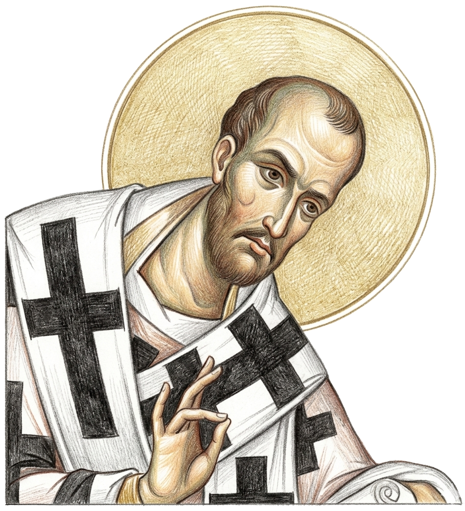
One of the first references to the Lord’s Prayer in the liturgy at Constantinople is the famous sermon of St John Chrysostom given in July 399 concerning the fallen Eutropius. Eutropius was born a slave, but through strange circumstances became the Consul of Emperor Arcadius. By intrigue and deception, and by surrounding the emperor with worldly pleasures, Eutropius became the real power behind the throne and perpetrated all sorts of evil. He eliminated all of his competitors and even cut off their means of escape by abolishing the Church’s right to grant asylum to fugitives – much to the dismay of Archbishop John Chrysostom. Eutropius’ fortunes dramatically reversed one day and with imperial soldiers in pursuit, he fled to the church, drew aside the altar curtains and clung to one of its columns. From there he begged Chrysostom for asylum.
The next day was Sunday and people flooded into the church to hear what was happening. As Chrysostom began his sermon the curtain of the sanctuary was drawn aside revealing the cowering form of the miserable Eutropius clinging to one of the columns of the Holy Table. Many a time had the Archbishop preached to unheeding ears on the vain and fleeting character of worldly honor, prosperity, luxury, and wealth: now he would force attention, and drive home his lesson to the hearts of his vast congregation by pointing to a visible example of fallen grandeur in the poor wretch who lay groveling behind him.
As well as speaking against the vanity of worldly riches and honor, Chrysostom also asked not only Emperor Arcadius but the people to forgive Eutropius by reminding them that they would soon be reciting the Lord’s Prayer as part of the Liturgy. He said, Moreover let me add some arguments which concern ourselves. For what pardon could you deserve, if the Emperor bears no resentment when he has been insulted, but you, who have experienced nothing of this kind, display so much wrath? How after this assembly has been dissolved will you handle the Holy Mysteries [receive Com—
- The Lord’s Prayer was not originally a part of the Liturgy. It was, however, recommended as a private prayer especially for forgiveness before approaching the Holy Table by Tertullian (†220) and Cyprian (†258).6 By 380, it had become a part of the Liturgy in Jerusalem. Taft, The Precommunion Rites, 147–148.
munion], and repeat that prayer by which we are commanded to say ‘forgive us as we also forgive our debtors’ when you are demanding vengeance upon your debtor? Has he inflicted great wrongs and insults on you? I will not deny it. Yet this is the season not for judgment but for mercy; not for requiring an account, but for showing lovingkindness; not for investigating claims but for conceding them; not for verdicts and vengeance, but for mercy and favor.
The Lord’s Prayer
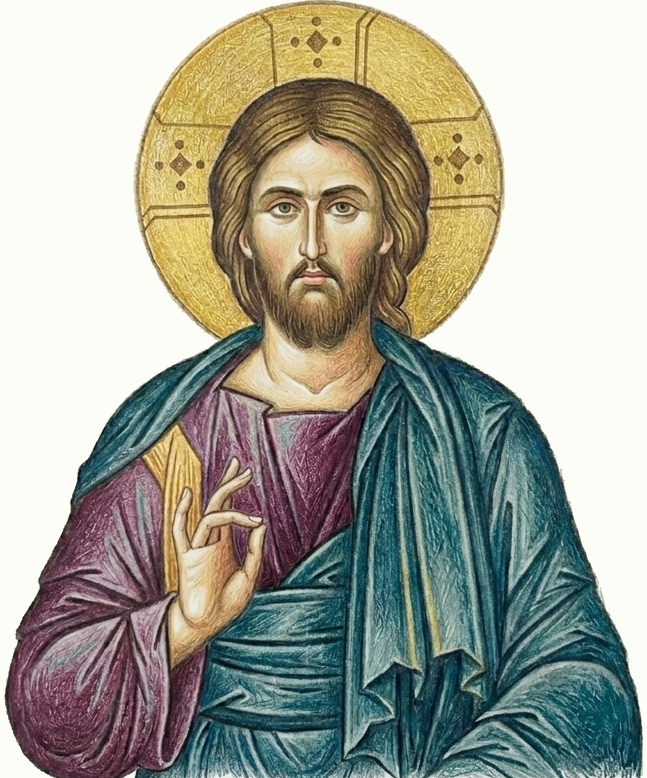
The Lord’s Prayer is the quintessential prayer of all Christianity, … It is the prayer from which all the other prayers of the Church are derived, either directly or indirectly, and which in itself contains the essence of the message of the faith and prescription for salvation….
Throughout the gospels Jesus Christ frequently…refers to the supra-heavenly God, God the Father, as ‘My Father’. Always, in referring to the Father, this familiar ‘My’ is used, thus identifying Himself in a fully filial relationship to the Godhead. No one anywhere else in Holy Scripture takes such liberty.
Yet in the Lord’s Prayer, He extends to us fallen creatures the incomparable and unique privilege of addressing the divine Majesty of the Lord of all, the God of Abraham, Isaac, and Jacob, the Creator and Ruler of cosmos, He who is and ever shall be, as ‘Father’…. The Greek word is epouranion, supra-heavenly, to remind us that God is not of this world, nor of its families. He transcends all that we know and can conceive, and that we can approach Him only through His only-begotten Son alone. Note the words of the Liturgy which immediately precede the prayer: ‘And make us worthy O master, that with boldness and without condemnation we may dare to call on Thee, the heavenly God, as Father, and to say:’
That we may dare! Dare to call the Lord of all ‘Daddy’ even as we would address our own parent! Note that in the prayer, Jesus tells us to address God as ‘Our Father. We are never told to address Him as ‘my Father’. That degree of possessiveness is reserved entirely to the Son of God – Jesus Christ – who is His Son from all eternity by nature. We as human beings may yet become what Christ is by nature through the operation of divine grace. Thus in that sense we, too, may become children of God therefore brothers and sisters of Christ, as it were, by adoption through His infinite mercy and infinite love in the Holy Spirit. And therefore since we belong one to another, all partake equally and uniformly of our human nature. We do so collectively and never as individuals; we must address the living God as Our Father’ and never in an individual or possessive way.
Greeting
Priest: Peace be unto all.
People: And to your spirit.
Bowing the Head (The Inclination)15
Deacon: Bow your heads unto the Lord.
The priest prays silently: ▶
Inclination Prayer
People: To Thee, O Lord.
Priest: ▶ We give thanks unto Thee, O King invisible, who by Thy measureless power didst make all things, and in the greatness of Thy mercy didst bring all things from non-existence into being. Look down from heaven, O Master, upon those who have bowed their heads unto Thee, the awesome God. Do Thou Thyself, O Master, distribute these Gifts here offered, unto all of us for good, according to the individual need of each; sail with those who sail, travel with those who travel by land and by air; heal the sick, O Thou who art the physician of our souls and bodies….
Then proclaims out loud: ▶
Priest: ▶ …Through the grace and compassion and love toward mankind of Thine only-begotten Son, with whom Thou art blessed, together with Thine all-holy, good, and life-creating Spirit, now and ever and unto ages of ages.
Elevation Prayer
People: Amen.
Priest: Attend, O Lord Jesus Christ our God, out of Thy holy dwelling-place, from the throne of glory of Thy Kingdom; and come to sanctify* us, O Thou who sittest on high with the Father, and art here invisibly present with us; and by Thy mighty hand impart unto us Thy most pure Body and precious Blood, and through us to all the people.
Priest: ▶ O God, cleanse me, a sinner, and have mercy on me. (3 times)
The deacon crosses his orar over his shoulders. The priest makes three low bows before the altar saying each time: ▶
Deacon: ▶ Let us attend!
Priest: ▶ The Holy things are for the holy!
People: One is Holy. One is the Lord Jesus Christ, to the glory of God the Father. Amen
People: The Communion Hymn
When the deacon sees the priest stretch out his hands and touch the Holy Bread in order to make the elevation, he exclaims: ▶
The priest elevates the Holy Bread and exclaims: ▶
The deacon then enters the sanctuary.
Faithful
> Anaphora -The Eucharistic Prayer (Preface > Remembrance > Epiclesis > Intercession) >
> Litanies > Lord’s Prayer > Elevation > Fraction > Communion > Conclusion
The Deacon Crossing His Orar
While the priest reads the prayer, the deacon stands before the Holy Doors and crosses his orar around himself. This is done so that during the time of communion the deacon can serve without interference. It is done also to demonstrate the deacon’s reverence toward the Holy Mysteries by approaching communion in a way imitating the seraphim covering themselves with their wings. Concerning this, Symeon the New Theologian (†1022) explains: ‘The deacon is adorned with this (orar) as with wings and covers himself in reverence and humility especially during communion, thus imitating the seraphim who, as it is written, have six wings, two of which cover their face, two the feet, and with two they fly, exclaiming, Holy, Holy, Holy.
-
“An Inclination [or bowing of heads] was originally a rite of blessing located at the conclusion of a service or one of its sections.” (Taft, Precommunion, 156) “It first appears in the precommunion rites at the end of the 4th century, precisely when we first hear complaints about the decline in the number of communicants. Since the distribution of communion, given under two species separately in those days, took a fair amount of time, it is probable that non-communicants had begun to leave during it. This would not only have caused some disturbance. In the liturgical protocol of Late Antiquity it would have been offensive. One did not simply drift out of church services at will without first being blessed and dismissed.” (Taft, Precommunion, 193).
Bowing the Head (Inclination)
The priest has just reminded the faithful “of their nobility, calling God their Father; now he calls upon them to acknowledge Him as Lord, and to give Him a sign of their servitude by bowing their heads, thus indicating their dependence on Him. They bow before Him not simply as creatures before their Lord and Creator, but as purchased slaves to Him who obtained them at the price of the Blood of His only Son. He possesses us by double right, as slaves whom He has made His children. For His precious Blood both increased our slavery and brought about the Divine adoption.
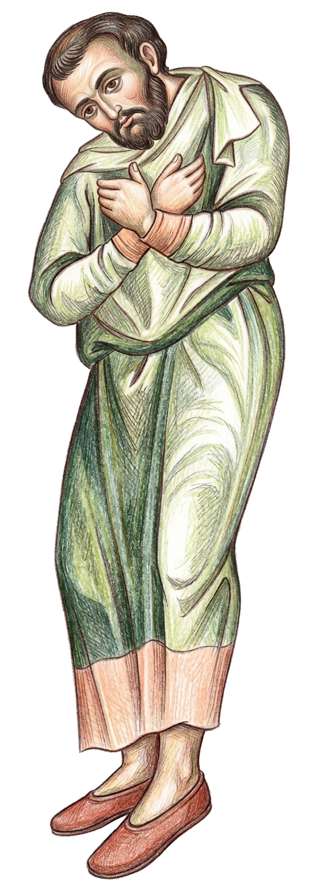
The Elevation
The priest takes in his hands the Divine Bread and lifts it up saying ‘The Holy things are for the holy!’ This ancient rite of Elevation is the original form of communion. In its perfect conciseness it expresses the antinomy*, the supra-rational nature of religion. It forbids anyone who is not holy to partake of the Divine Holiness. But none is holy, but the Holy One. And the choir answers, affirming it: One is Holy. One is the Lord Jesus Christ. Yet, come and receive, for He has sanctified us with His Holiness, has made us His holy people. Again and again the mystery of the Eucharist is revealed as the mystery of the Church, the Body of Christ in which we eternally become what we are called to be.
Nicholas Cabasilas (ca. 1350) explains for no one has holiness of himself; it is not the consequence of human virtue, but comes to all from Him and through Him. It is as if we were to place mirrors beneath the sun; each would shine, and send forth rays of light, so that one would think in truth there is but one sun which shines in all; just so Christ, the only Holy One, shines upon the faithful, shines in so many souls, and gives light to many saints; to the glory of the Father.
-
Therefore, it is possible that the Inclination was introduced for the same reason as the aiteseis prayers (see note 12 above). These “dismissal” prayers “may have been introduced into the precommunion to put some order into the haphazard and disturbing withdrawal of the non-communicants.” (Taft, Precommunion, 183) Later these prayers were transformed into prayers of preparation for communion. See Robert Taft, Precommunion, 155–197.
Manual Acts of Preparation
People: The Communion Hymn
Praise the Lord from the heavens! Praise Him in the highest! Alleluia! Alleluia! Alleluia!
(Note: This hymn is sung on Sundays only while other days and feasts have special communion hymns.)
Breaking the Bread (Fraction)
Deacon: ▶ Divide, Master, the Holy Bread.
Priest: ▶ Divided and distributed is the Lamb of God: who is divided, yet not disunited; who is ever eaten, yet never consumed; but sanctifying those who partake thereof.
Commingling
Deacon: Fill, Master, the Holy Cup.
Priest: ▶ The fullness of the Holy Spirit
Deacon: Amen.
The Rite of Warmth (Zeon)
Deacon: Bless, Master, the warm water.
Priest: ▶ Blessed is the warmth of Thy holy things always, now and ever and unto ages of ages. Amen.
Deacon: ▶ The warmth of faith, full of the Holy Spirit, Amen.
Priest: Deacon, draw near.
The deacon returns to the sanctuary, closes the Holy Doors, and stands on the right side of the priest and says: ▶
The priest divides the Holy Bread into four parts and says: ▶
The priest arranges the pieces on the rim of the paten in the form of a cross. The portion IC is placed in the chalice. The portion XC is for the communion of the celebrants. The other two portions, NI and KA are broken for the communion of the faithful.
As the priest places the portion IC into the chalice, he makes the sign of the Cross with it over the chalice saying: ▶
The priest blesses the warm water saying: ▶
The deacon pours water into the chalice cross-wise saying: ▶
The priest breaks the portion XC into a number of pieces corresponding to the number of clergy who take part.
Faithful
> Anaphora -The Eucharistic Prayer (Preface > Remembrance > Epiclesis > Intercession) >
> Litanies > Lord’s Prayer > Elevation > Fraction > Communion > Conclusion
The Manual Acts of Preparation for Communion
Breaking the Bread (Fraction)
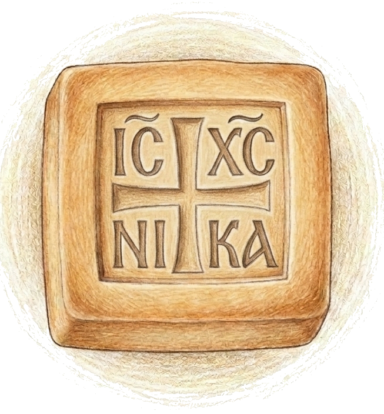
The early Church called the whole eucharistic service “breaking of bread,” for this rite was central in the liturgical celebration. Its meaning is clear: the same and one bread which is given to many, is the same and one Christ becoming the life of many, uniting them in Himself: Unite all of us to one another who become partakers of the one Bread and Cup in the Communion of the Holy Spirit …(the Liturgy of St Basil).
Then the priest breaking the Bread says: Divided and distributed is the Lamb of God: who is divided, yet not disunited; who is ever eaten, yet never consumed; but sanctifying those who partake thereof. This is the one source of life that brings all to it and redeems the unity of all men under one Head – Christ.
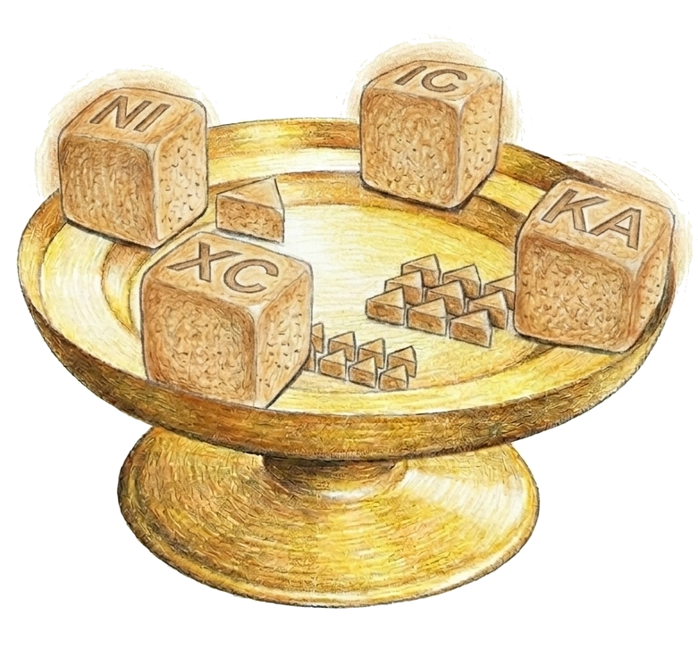
“Even though every day the immaculate Body of Christ is broken and His Blood is poured out on the Holy Altar, still the smallest particle of the Lamb is the whole Christ. And even though many liturgies are performed at the same moment around the world, still there are not many bodies of Jesus Christ, since in each the same Christ is present. So when someone communes in the smallest part of the Bread, he communes in His whole Body and Blood.
Commingling
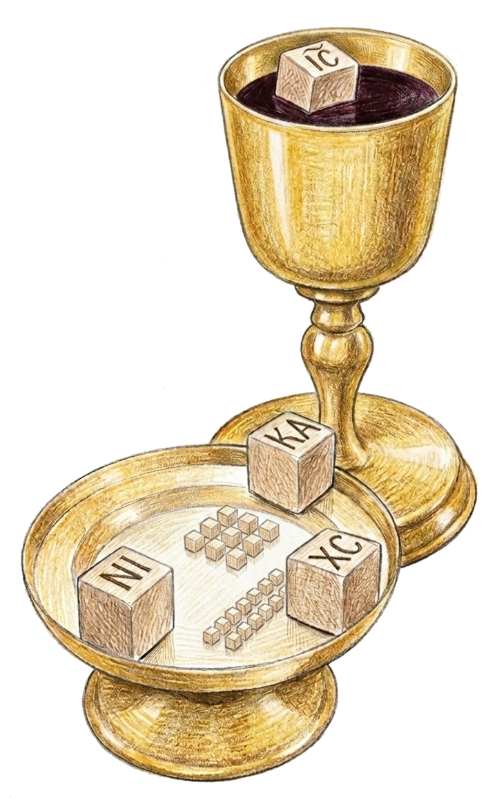
The commingling rite, i.e. placing the Holy Bread into the Chalice, is an ancient part of the Divine Liturgy. Theodore of Mopsuestia (ca. 392) writes: ‘And he [the bishop] joins them together reuniting the Body and Blood, showing everyone that, although two, they are one in power and are not separate after the separation which occurred at the moment of the death and passion undergone by the Body of our Lord when He was crucified on the cross for all of us. …for this reason it is customary to drop the Body into the Chalice little by little, in order to show that they are inseparable and one in power and confer the same grace to those who receive them.’
The commingling ‘completes’ the mystery by perfecting the union of the elements as a sign of the resurrection and consequently the union of Body, Blood, and Spirit in the incorruptible Risen Lord, so that they may return united to us in communion. Though the reality was already accomplished at the Epiclesis [the invocation of the Holy Spirit], it must also be so in sign at the completion of the sacrifice, before being broken and distributed in communion.
Whereas the consecrated Bread and Wine is a twofold sign of Christ’s sacrificial Body and Blood, the commingling, symbolizing the union of these two species, images the glorified humanity of the Risen Christ and our participation, via communion, in His risen life.
Manual Acts of Preparation
(Repeated from previous page)
People: The Communion Hymn
The Rite of Warmth (Zeon)
Deacon: Bless, Master, the warm water.
Priest: ▶ Blessed is the warmth of Thy holy things always, now and ever and unto ages of ages. Amen.
Deacon: ▶ The warmth of faith, full of the Holy Spirit, Amen.
Priest: Deacon, draw near.
The priest blesses the warm water saying: ▶
The deacon pours a sufficient quantity of water into the chalice cross-wise saying: ▶
The priest breaks the portion XC into a number of pieces corresponding to the number of clergy who take part in the Liturgy.
Faithful
> Anaphora -The Eucharistic Prayer (Preface > Remembrance > Epiclesis > Intercession) >
> Litanies > Lord’s Prayer > Elevation > Fraction > Communion > Conclusion
The Rite of Warmth (Zeon)16
After placing the Holy Bread into the Chalice, a little warm water is added. This rite is particular to the Byzantine Liturgy and is found in no other liturgical tradition. From the 11th century on, Byzantine commentators explained that the use of hot water was to ‘show that we receive in communion not the cold body and blood of a cadaver, but the warm and life-giving Body and Blood of our Redeemer.’
Nicholas Cabasilas (ca. 1350) offered one explanation of the rite: The priest drops into the chalice a little warm water to symbolize the descent of the Holy Spirit upon the Church. For the Holy Spirit is given when the whole plan of redemption is completed. And now the descent of the Spirit comes about when the sacrifice has been offered and the holy offerings have reached their perfection.…. What is the effect and the result of the sufferings and works and teaching of Christ? Considered in relation to ourselves, it is nothing other than the descent of the Holy Spirit upon the Church.
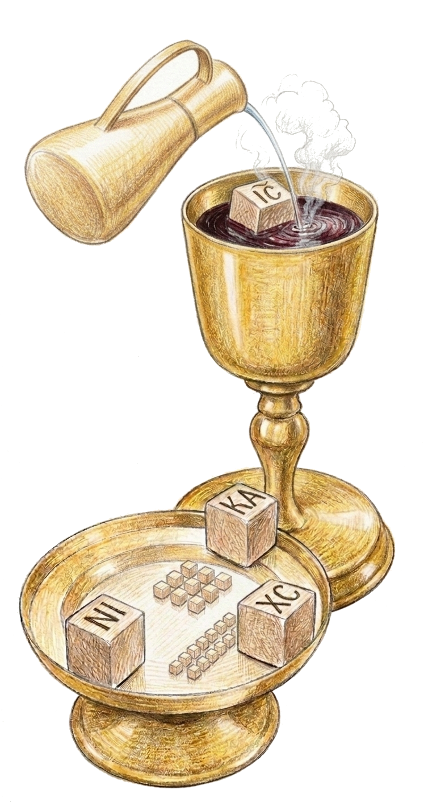
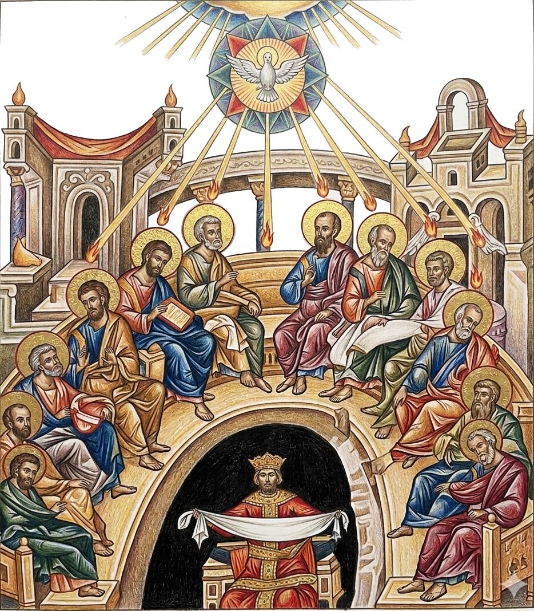
So it is fitting that this should be represented after the other mysteries, as it is when the warm water is poured into the chalice. Since this warm water is not only water, but shares the nature of fire, it signifies the Holy Spirit, who is sometimes represented by water, and who came down upon the Apostles in the form of fire. …for the mysteries also represent the Church, which is the Body of Christ; she received the Holy Spirit after our Lord’s ascension; now she receives the gift of the Holy Spirit after the offerings have been accepted at the heavenly altar. God, who has accepted them, sends us the Holy Spirit in return, as we have said; for then and now there is one Mediator and one Spirit.
-
The history of the zeon rite is very complex and historical texts do not make it clear at what date the Byzantines began adding hot water to the already-consecrated chalice immediately before communion. It is not until the 11th century that symbolic explanations of the zeon rite appear. Robert Taft has suggested that from the very beginning the Byzantines, like most Christian communities, added water to the wine before the consecration as is done today during the rite of the Prothesis. Where it was customary in domestic usage, as it was in most cultures, hot water was used.
“The desire to keep the chalice warm right up until communion to signify that we receive the body and Blood of the living, Risen Christ, led to delaying the infusion of hot water until before the Great Entrance and ultimately until just before communion, or if hot water had been added at the henosis [that is during the Prothesis], to adding additional hot water to the chalice just before communion.” Taft, Precommunion, 502.
Communion
Communion of the Clergy in the Holy Bread
Deacon: ▶ Brother and concelebrant, forgive me. (if there are more: Brethren and concelebrants, forgive me.)
Priest: Deacon, draw near.
Deacon: ▶ [Lo, I draw near unto Christ, our immortal King and our God.] Give me, Master, the precious and holy Body of our Lord and God and Savior Jesus Christ.
Priest: ▶ To the deacon (name) is given the precious, holy, and most pure Body of our Lord and God and Savior Jesus Christ, for the remission of his sins, and unto life everlasting.
Priest: ▶ The precious and most holy Body of our Lord and God and Savior Jesus Christ, is given unto me, the unworthy priest (name) for the remission of my sins, and unto life everlasting.
The Prayer Before Communion
Priest and deacon: ▶ I believe, O Lord and I confess that Thou art truly the Christ, the Son of the living God, who camest into the world to save sinners, of whom I am first. I believe also that this is truly Thine own most pure Body, and that this is truly Thine own precious Blood. Therefore, I pray Thee: have mercy upon me and forgive my transgressions both voluntary and involuntary, of word and of deed, committed in knowledge or in ignorance. And make me worthy to partake without condemnation of Thy most pure Mysteries, for the remission of my sins, and unto life everlasting. Amen.
Of Thy Mystical Supper, O Son of God, accept me today as a communicant; for I will not speak of Thy Mystery to Thine enemies, neither like Judas will I give Thee a kiss; but like the thief will I confess Thee: Remember me, O Lord, in Thy Kingdom.
May the communion of Thy holy Mysteries be neither to my judgment, nor to my condemnation, O Lord, but to the healing of soul and body.
The deacon sets aside the zeon, stands a little way off and says: ▶
The deacon approaches and bows, kisses the altar, and says: ▶
The priest gives the deacon a portion of the Holy Bread saying: ▶
The deacon kisses the priest’s hand as he receives the Holy Bread and goes behind the altar.
The priest takes a portion of the Holy Bread for himself and says: ▶
The priest and deacon bow their heads and pray: ▶
The priest and deacon then partake of the Holy Bread.
Faithful
> Anaphora -The Eucharistic Prayer (Preface > Remembrance > Epiclesis > Intercession) >
> Litanies > Lord’s Prayer > Elevation > Fraction > Communion > Conclusion
Forgive Me
When the deacon comes forward, he asks forgiveness from the priest. In the same way the people who want to take communion, bow to those present and say either out loud or silently, ‘Forgive me,’ and then all answer, May God forgive you. Communion is given, first, for the remission of sins and is, therefore, the sacrament of reconciliation achieved by Christ in His own Sacrifice and eternally granted to those who believe in Him….
Sinners, of whom I am first
“This is a faithful saying and worthy of all acceptance, that Christ Jesus came into the world to save sinners, of whom I am chief.” 1 Timothy 1.15
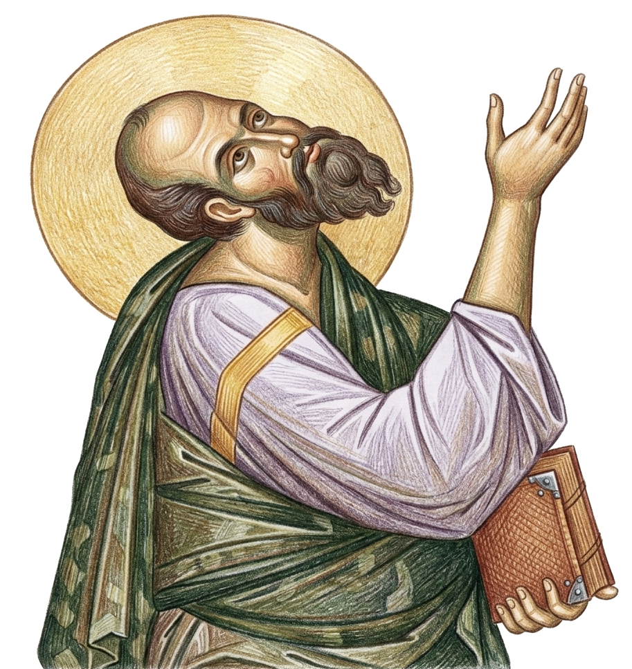
The Prayer Before Communion is the confession of faith of St Peter and St Paul…Paul wrote Timothy that he was the worst of all sinners which demonstrates great humility before God. In his homily on 1 Timothy 1.15 St John Chrysostom asks: “But how is it, that he [Paul] here calls himself a sinner, no, the chief of sinners, whereas he elsewhere asserts that he was ‘as to the righteousness which is in the Law, found blameless?’ (Philippians 3.6) Because with respect to the righteousness which God has brought about (the justification which is really required) even those who are righteous in the law are sinners, ‘for all have sinned, and come short of the glory of God.’ (Romans 3.23)
Therefore he does not say righteousness simply, but ‘the righteousness which is in the Law.’ As a man that has acquired wealth, with respect to himself appears rich, but upon a comparison with the treasures of kings is very poor and the chief of the poor; so it is in this case. Compared with angels, even righteous men are sinners; and if Paul, who fulfilled the righteousness that is in the law, was the chief of sinners, what other man can be called righteous? For he says this not to condemn his own life as impure, let this not be imagined; but comparing his own legal righteousness with the righteousness of God, he shows it to be worth nothing, and not only so, but he proves those who possess it are sinners.”
Communion of the Priest and Deacon
Priest: ▶ The precious and holy Blood of our Lord and God and Savior Jesus Christ is given unto me, the unworthy priest (name), for the remission of my sins, and unto life everlasting. Amen.
Priest: ▶ In the name of the Father, and of the Son, and of the Holy Spirit. Amen.
Priest: ▶ Lo, this has touched my lips, and shall take away my iniquities, and cleanse my sins.
Priest: Deacon, draw near.
Deacon: ▶ Lo, I draw near unto the immortal King and our God. Give unto me, Master, the precious and holy Blood of our Lord and God and Savior Jesus Christ.
Priest: ▶ The servant of God, Deacon (name), partakes of the precious and holy blood of our Lord and God and Savior Jesus Christ, for the remission of his sins, and unto life everlasting.
Priest: ▶ Lo, this has touched your lips, and shall take away your iniquities, and cleanse your sins.
After partaking of the Holy Bread the priest says: ▶
The priest drinks from the Cup three times and says: ▶
The priest wipes his lips and the edge of the chalice with the cloth he holds in his hands and says: ▶
The deacon approaches and bows once saying: ▶
The priest holds the chalice and says: ▶
After the deacon has partaken the priest says: ▶
The priest then divides the two remaining portions of the Holy Lamb (NI and KA) into small pieces so that there will be enough for all the communicants. He puts them into the chalice for the communion of the people and the chalice is covered with a veil.
Communion of the People
Deacon: ▶ In fear of God, and with faith, draw near!
People: Blessed is He that comes in the name of the Lord! God is the Lord and has revealed Himself to us!
The Holy Doors are opened and the deacon takes the chalice, goes through the doors, shows the people the chalice and proclaims: ▶
Faithful
> Anaphora -The Eucharistic Prayer (Preface > Remembrance > Epiclesis > Intercession) >
> Litanies > Lord’s Prayer > Elevation > Fraction > Communion > Conclusion
Receiving the Holy Bread in the Hands
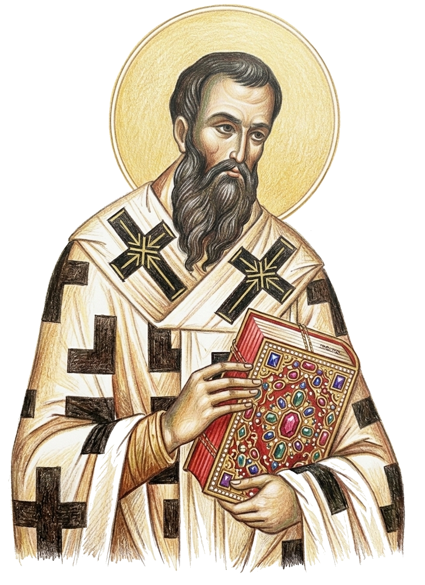
Before the 8th century both the clergy and the people received the Holy Bread in their hands. Today only the priest and the deacon receive the Holy Body of the Savior in their hands. The right hand is placed on top of the left. St Cyril of Jerusalem (315–386) explained this form of receiving the Holy Bread: In approaching, therefore, come not with your wrists extended, or your fingers spread; but make your left hand a throne for the right, as for that which is to receive a King. And having hollowed Thy palm, receive the Body of Christ, saying over it, Amen. So then after having carefully hallowed Thine eyes by the touch of the Holy Body, partake of it; giving heed lest you lose any portion thereof; for whatever you lost, is evidently a loss to you as it were from one of your own members. For tell me, if any one gave you grains of gold, would you not hold them with all carefulness, being on your guard against losing any of them, and suffering loss? Will you not then much more carefully keep watch, that not a crumb fall from you of what is more precious than gold and precious stones?
For the Remission of Sins
Whenever a sinner comes to himself and repents, the heavenly King is ready to forgive ten thousand loads of sin, and to return to the sinner all the gifts of which he has been deprived. Not only can no one attain to the measure of God’s benevolence; no one can even describe it. ‘I have swept away your offenses like a cloud, your sins like the morning mist. Return to Me, for I have redeemed you’ (Isaiah 44.22), says the Lord. He who turns to God in sincere repentance receives God’s forgiveness for all his sins….
“knowing that you were not redeemed with corruptible things, like silver or gold, from your aimless conduct received by tradition from your fathers, but with the precious blood of Christ, as of a lamb without blemish and without spot.” 1 Peter 1.18–19
“The next day John saw Jesus coming toward him, and said, ‘Behold! The Lamb of God who takes away the sin of the world!’” St John 1.29
Draw Near!
In most churches the Royal Gates are closed at this point while the priest is receiving communion…. When he has completed his own communion, the doors are opened, and the priest comes forward with the chalice raised high. It is as if the rock has been moved away from the tomb and the Resurrected Lord now comes toward us. The New Life of Christ is offered to you and all who are prepared to approach the Source of Life, Jesus Christ who is the Victor over death, and sin and evil. Here is the culmination of the divine Liturgy, here is the whole reason for this greatest act of common action and worship. That…
… lowly human beings with all of their imperfections, with their sinfulness and in the midst of the recurring discord caused by their fallen nature, may nonetheless stand for a moment outside of time at the very foot of the Throne and commune with the Infinite!
Communion of the People
(repeated from page 88)
The priest then divides the two remaining portions of the Holy Lamb (NI and KA) into small pieces so that there will be enough for all the communicants. He puts them into the chalice for the communion of the people and the chalice is covered with a veil.
Deacon: ▶ In fear of God, and with faith, draw near!
People: ▶ Blessed is He that comes in the name of the Lord! God is the Lord and has revealed Himself to us!
The Holy Doors are opened, the deacon and the priest both bow.
Then the deacon receives the chalice from the priest, goes to the doors, shows the people the chalice and proclaims: ▶
The people, seeing the Holy Mysteries, bow and answer this call by saying: ▶
Then the people come near and pray with the priest: ▶
The Prayer Before Communion
Priest and People: ▶ I believe, O Lord, and I confess that Thou art truly the Christ, the Son of the living God, who camest into the world to save sinners, of whom I am first. I believe also that this is truly Thine own most pure Body, and that this is truly Thine own precious Blood. Therefore, I pray Thee: have mercy upon me and forgive my transgressions both voluntary and involuntary, of word and of deed, committed in knowledge or in ignorance. And make me worthy to partake without condemnation of Thy most pure Mysteries, for the remission of my sins, and unto life everlasting. Amen.
Of Thy Mystical Supper, O Son of God, accept me today as a communicant; for I will not speak of Thy Mystery to Thine enemies, neither like Judas will I give Thee a kiss; but like the thief will I confess Thee: Remember me, O Lord, in Thy Kingdom.
May the communion of Thy holy Mysteries be neither to my judgment, nor to my condemnation, O Lord, but to the healing of soul and body.
People: Receive the Body of Christ; taste the fountain of immortality. Alleluia! Alleluia! Alleluia!
Priest: ▶ The servant of God (name), partakes of the precious and holy Body and Blood of our Lord and God and Savior Jesus Christ, for the remission of sins and unto life everlasting.
Those who will communicate approach one by one, holding their hands folded on their breast. As each receives communion the priest prays: ▶
The deacon cleans the lips of each. The communicant kisses the chalice.
Faithful
> Anaphora -The Eucharistic Prayer (Preface > Remembrance > Epiclesis > Intercession) >
> Litanies > Lord’s Prayer > Elevation > Fraction > Communion > Conclusion
Giving Communion with the Spoon
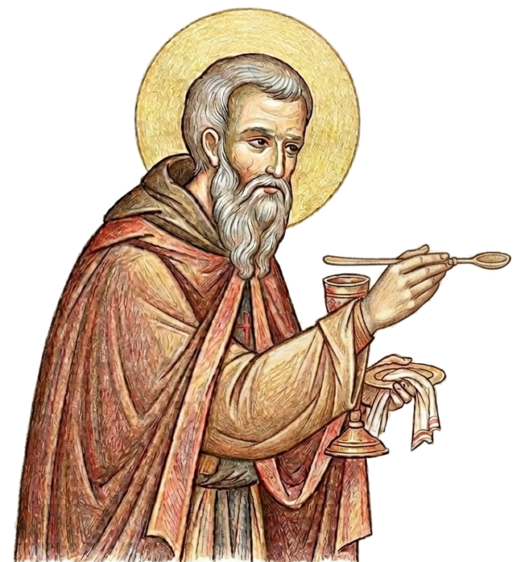
We do not know precisely when and where the custom began of giving communion with a spoon. The council in Trullo of 692 forbade the use of any kind of receptacle for receiving Communion, and affirmed that the hands of a living man, made in the image and likeness of God, are the only appropriate receptacle for the sacrament of the Body of Christ. The spoon seems to have been introduced some time during the eighth century, and its use gradually spread. In its origin, it stems from a practical problem. Its primary intention was to be able to give communion to large numbers of people quickly and to make them eat the Holy Gifts. In ancient times there arose a certain problem with some not eating, but taking the Eucharist home to use it for superstitious purposes.
The Prayer Before Communion
No one merits communion: no one is worthy, holy, or righteous enough by themselves to receive it. Yet this saving blessing comes to us as a free gift from God, and for this reason we refer to the sacred species — the bread and the wine which are consecrated for us — as the Holy Gifts. In the Eucharist we offer to God those very basic elements upon which our physical life depends — elements of our food and drink — and in return we receive the heavenly Bread and the heavenly Drink which restores us and leads us to eternal life.
Communion of the People
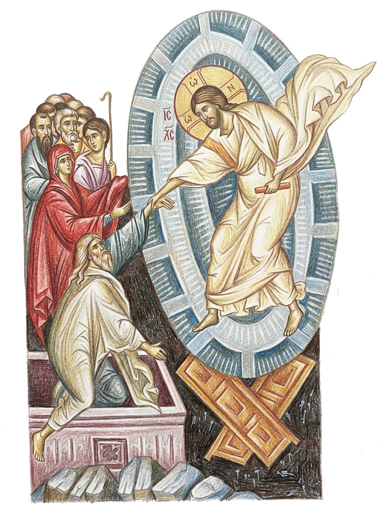
Communion, then, is the essential food of the Christian, strengthening his spiritual life, healing his diseases, affirming his faith, making him capable of leading a truly Christian life in this world. Communion, finally, is the ‘token of life eternal,’ an anticipation of the joy, peace, and fullness of the Kingdom, a foretaste of its light. Communion is both partaking of Christ’s suffering, the expression of our readiness to accept His ‘way of life,’ and sharing in His victory and triumph.
After Communion
Hymns of the Resurrection
People: …Receive the Body of Christ; taste the fountain of immortality. Alleluia! Alleluia! Alleluia!
Deacon: ▶ Having beheld the Resurrection of Christ, let us worship the holy Lord Jesus, the only Sinless One. We venerate Thy Cross, O Christ, and we praise and glorify Thy holy Resurrection; for Thou art our God, and we know no other than Thee; we call on Thy name. Come all you faithful, let us venerate Christ’s holy Resurrection! For, behold, through the Cross joy has come into all the world. Let us ever bless the Lord, praising His Resurrection, for by enduring the Cross for us, He has destroyed death by death.
Shine! Shine! O New Jerusalem! The glory of the Lord has shone on you! Exult now and be glad, O Zion! Be radiant, O Pure Theotokos, in the Resurrection of thy Son!
O Christ! Great and most holy Pascha! O Wisdom, Word, and Power of God! Grant that we may more perfectly partake of Thee in the never-ending Day of Thy Kingdom.
Deacon: ▶ Wash away, O Lord, the sins of all those remembered here, by Thy precious Blood; through the prayers of Thy saints.
After communion, [the priest kisses the chalice and bows.] He then enters the sanctuary and sets the Holy Things down on the altar.
The deacon holds the paten over the chalice and says the Hymns of the Resurrection: ▶
The deacon wipes the remaining particles, (i.e. those representing the Theotokos, the saints, and the living and dead in Christ) from the paten into the chalice and says: ▶
The priest blesses the people saying: ▶
Priest: ▶ O God, save Thy people, and bless Thine inheritance.
People: We have seen the true Light! We have received the heavenly Spirit! We have found the true Faith! Worshipping the undivided Trinity, who has saved us.
Priest: ▶ Be Thou exalted, O God, above the heavens, and Thy glory over all the earth.
Priest: ▶ Blessed is our God…
The priest covers the chalice with one veil. He puts all others on the paten, and covers this also. He censes the chalice three times saying: ▶
The priest places the discos on the deacon’s head. The deacon then turns and looks to the people but says nothing and goes to the prothesis table and sets the discos down. The priest, having made a reverence, takes the chalice, turns toward the doors, looks to the people, and says silently: ▶ then aloud: ▶
Priest: ▶ …always, now and ever and unto ages of ages.
People: Amen.
Faithful
> Anaphora -The Eucharistic Prayer (Preface > Remembrance > Epiclesis > Intercession) >
> Litanies > Lord’s Prayer > Elevation > Fraction > Communion > Conclusion
After Communion
After receiving the Holy Mysteries, you should return to your place. Your mood, if not your exact words should parallel those of St Paul who said, ‘It is no longer I who live, but Christ who lives in me; and the life I now live in the flesh, I live by faith in the Son of God, who loved me and gave Himself for me.’ Galatians 2.19–20
Hymns of the Resurrection
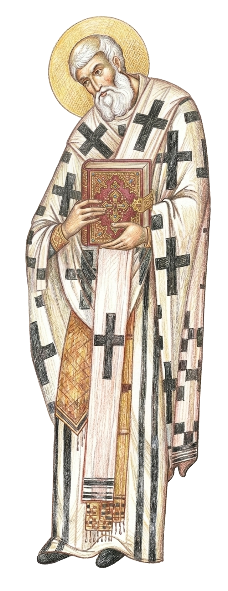
St Athanasius was born in Alexandria, Egypt, around 298 AD, only a few years before the last and greatest persecution of Christians was begun by Emperor Diocletian. From the time he was about 5 years old until he was 11, Athanasius personally witnessed many of his loved ones, neighbors, and play-mates being killed for their faith in Christ. He later described how willingly and even joyfully they gave their life for their Savior, many going to their death singing hymns of praise to God. In his work On the Incarnation he wrote: All the disciples of Christ despise death; they take the offensive against it and, instead of fearing it, by the sign of the cross and by faith in Christ, trample on it as on something dead. Before the divine sojourn of the Savior, even the holiest of men were afraid of death, and mourned the dead as those who perish. But now that the Savior has raised His Body, death is no longer terrible, but all those who believe in Christ tread it underfoot as nothing, and prefer to die rather than to deny their faith in Christ, knowing full well that when they die they do not perish, but live indeed, and become incorruptible through the resurrection…. If you see with your own eyes men and women and even children thus welcoming death for the sake of Christ’s religion, how can you be so utterly silly and incredulous and maimed in your mind as not to realize that Christ, to Whom these all bear witness, Himself gives the victory to each, making death completely powerless for those who hold his faith and bear the sign of the cross?
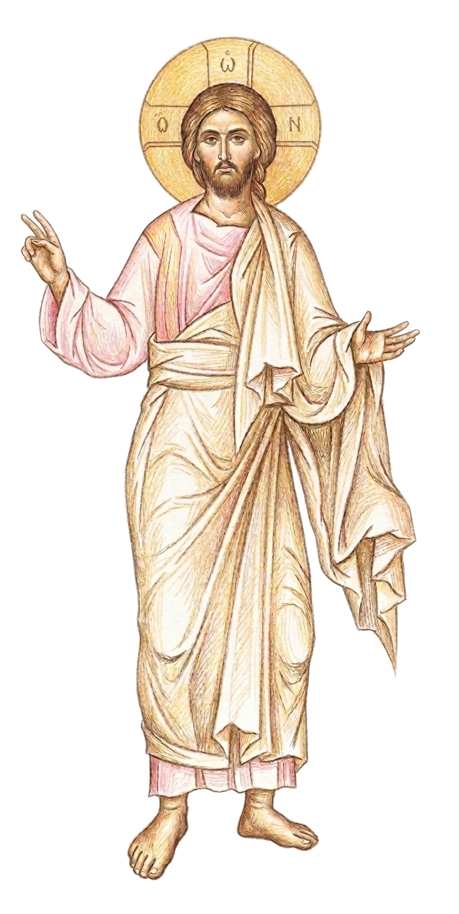
We Have Seen the True Light
As we leave the church, we sing ‘We have seen the True Light, we have received the heavenly Spirit.’ We see and receive so that we may be able to do what the apostles did. Christ said to them, ‘You are witnesses of these things’ (St Luke 24.48). Now of what am I a witness? I am a witness of all that I have seen, of what I have received, of what happened to me in my Baptism. I am a witness that God has loved me and therefore has loved everyone, that God has created this world and when this world had forgotten Him, He did not forget it. He came down. He suffered on the Cross. He died. He was risen from the dead. He loved us so much that He gave His Holy Spirit to us…. And so, when I go to men, to the one who is happy, or to the one who suffers, to the young and to the old, I am not bringing my programs, or my ideas, but Christ Himself. This is the Sanctification of Life.
People: Let our mouths be filled with Thy praise, O Lord, that we may sing of Thy glory; for Thou hast made us worthy to partake of Thy holy, divine, immortal, and life-creating Mysteries. Keep us in Thy holiness, that all the day we may meditate upon Thy righteousness. Alleluia! Alleluia! Alleluia!
Litany of Thanksgiving
Deacon: ▶ Let us attend! Having partaken of the divine, holy, most pure, immortal, heavenly, life-creating, and awesome Mysteries of Christ, let us worthily give thanks unto the Lord.
People: Lord, have mercy.
Deacon: Help us, save us, have mercy on us, and keep us, O God, by Thy grace.
People: Lord, have mercy.
Deacon: Asking that the whole day may be perfect, holy, peaceful, and sinless, let us commend ourselves and each other, and all our life unto Christ our God.
People: To Thee, O Lord.
The Prayer of Thanksgiving
Priest: ▶ We thank Thee, O Master who lovest mankind, Benefactor of our souls, that Thou hast made us worthy this day of Thy heavenly and immortal mysteries. Make straight our path; strengthen us all in Thy fear; guard our life; make firm our steps; through the prayers and intercessions of the glorious Theotokos and ever-virgin Mary, and of all Thy saints….
The priest carries the chalice to the prothesis table and censes it three times. He then returns to the altar.
The deacon unbinds his orar, comes out the north door, stands in his usual place, and says: ▶
Standing before the altar the priest prays silently: ▶
The priest folds the antimension, then takes the Gospel Book and with it makes the sign of the cross over it as he proclaims: ▶
Priest: ▶ …For Thou art our Sanctification, and unto Thee we ascribe glory: to the Father, and to the Son, and to the Holy Spirit, now and ever and unto ages of ages.
People: Amen.
Priest: ▶ Let us depart in peace.
People: In the name of the Lord.
Deacon: Let us pray to the Lord.
People: Lord, have mercy.
The priest then places the Gospel on the antimension.
The priest turns to the people and says: ▶
Faithful
> Anaphora -The Eucharistic Prayer (Preface > Remembrance > Epiclesis > Intercession) >
> Litanies > Lord’s Prayer > Elevation > Fraction > Communion > Conclusion
That All Day Long We May Meditate Upon Thy Righteousness
The reality of the Eucharist celebration does not end with the closing of the liturgical service. It can transform every moment of our lives if all day long we meditate on and remember God, His righteousness, and His love for us in Christ. A Christian is the one who, first of all, remembers. He can forget Christ; he can wake up in the morning and think only of the petty concerns of that particular day. Yet, on a deeper level, even these minor concerns become a very different experience if he remembers that he is not simply John Smith who has to do this or that, but the one to whom Christ has come, whose life Christ has assumed and has given a new meaning…. It is a time radically different from that of a person whose only concern in life is to mow his lawn, to have money in the bank, and then to trade in his Chevy for a Cadillac and the Cadillac for something else, and finally to die saying, ‘Well, I had all this and nothing has a meaning.’ It is sad, it is tragically sad, not to know that the past, the present, and the future have been given by Christ a new and joyful meaning.
The Litany and Prayer of Thanksgiving
This is eternal life, that they know Thee the only true God’ St John 17.3. All Christianity lies in these words of Christ. Man was created for knowledge of God, and in the knowledge of God is his true and thus eternal life…. The knowledge of God that Christ speaks of as eternal life is not the rational knowledge about God that, however ‘formally’ and ‘objectively’ correct, remains nevertheless within the limits and a part of that knowledge that is fallen and shattered, made feeble by sin, deprived of access to the essence of what is known and thus ceasing to be encounter, communion, unity.
Thanksgiving is the ‘sign,’ or better still, the presence, joy, fullness, of knowledge of God, i.e., knowledge as meeting, knowledge as communion, knowledge as unity. Just as it is impossible to know God and not give Him thanks, so it is impossible to give Him thanks without knowing Him. Knowing God transforms our life into thanksgiving, and thanksgiving transforms eternity into life everlasting.
The Prayer Before the Ambon17
Priest: ▶ O Lord, who blessest those who bless Thee, and sanctifiest those who trust in Thee: Save Thy people and bless Thine inheritance. Preserve the fullness of Thy Church. Sanctify those who love the beauty of Thy house; glorify them in return by Thy divine power, and forsake us not who put our hope in Thee. Give peace to Thy world, to Thy churches, to Thy priests, to all those in civil authority, and to all Thy people. For every good gift and every perfect gift is from above, coming down from Thee, the Father of Lights, and unto Thee we ascribe glory, thanksgiving, and worship: to the Father, and to the Son, and to the Holy Spirit, now and ever and unto ages of ages.
People: Amen.
The priest goes out and stands on the ambo and prays out loud: ▶
The deacon holds his orar and stands with his head bowed before the icon of Christ until the end of the Prayer Before the Ambon.
People: Blessed be the name of the Lord, henceforth and forevermore. (3 times)
The Prayer at the Consuming the Holy Gifts
Priest: ▶ O Christ our God, who art Thyself the fulfillment of the law and the prophets, who didst fulfill all the dispensation of the Father: fill our hearts with joy and gladness always, now and ever and unto ages of ages. Amen.
The deacon enters the sanctuary through the north door.
The priest enters into the sanctuary through the Holy Doors and going to the Prothesis Table he quietly prays this prayer over the bowed head of the deacon: ▶
The deacon then with all reverence and awe consumes the Holy Gifts.18
The priest blesses the people and says: ▶
Priest: ▶ The blessings of the Lord be upon you through His grace and love for mankind always, now and ever and unto ages of ages.
People: Amen.
The Dismissal
Priest: Glory to Thee, O Christ our God and our hope, glory to Thee!
People: Glory to the Father, and to the Son, and to the Holy Spirit, now and ever and unto ages of ages. Amen. Lord, have mercy. Lord, have mercy. Lord, have mercy. Father, bless.
Priest: May He who rose from the dead, Christ our true God, through the prayers of His most pure Mother; of the holy, glorious, and all-laudable apostles; of our father among the saints, John Chrysostom, Archbishop of Constantinople, of Saint _______ (of the church); of Saint _______, whom we commemorate today; of the holy and righteous Ancestors of God, Joachim and Anna; and all the saints: have mercy on us and save us, for He is good and loves mankind.
People: Amen.
Faithful
> Anaphora -The Eucharistic Prayer (Preface > Remembrance > Epiclesis > Intercession) >
> Litanies > Lord’s Prayer > Elevation > Fraction > Communion > Conclusion
END OF THE DIVINE LITURGY OF ST JOHN CHRYSOSTOM
- “This prayer is called the Prayer from the Ambon. In the primitive Church, it constituted a simple dismissal, a blessing which was probably no more than ‘Go in peace.’ Gradually it became more elaborate and was recited from the place from where the Gospel was read. This structure, called the ambon, is usually not seen in the churches of today, and the prayer is recited from before the icon of Christ.” Williams and Anstall, Orthodox Worship, 197.
- The deacon consumes the Holy Gifts with fear and with great reverence. “The deacon, or the priest if there is no deacon, first takes the spoon from the chalice, and then pours a little wine and water into the chalice so that the smallest particle will be consumed.
The Prayer Before the Ambon
As we are ready to depart in peace, i.e. in Christ and with Christ, we ask in the last prayer that the fullness of the Church be preserved, that the Eucharist we have offered and of which we have partaken, which realized once more the fullness of Christ’s presence and life in the Church, be maintained and preserved and kept undisturbed until we come together again as the Church, and, in obedience to the Lord of the Church, begin again the ascension into His Kingdom, which will find its ultimate fulfillment in the glorious Advent of Christ.
Preserve the Fullness of Thy Church
Commonion is given to me personally in order to transform me into a ‘member of Christ,’ to unite me with all those who receive Him, to reveal the Church as a fellowship of love. It unites me with Christ, but through Him I am in communion with the whole Church.
All the eucharistic worship is of necessity and by intention a corporate action. The blessed Bread is broken that it may be shared…. It is of the deepest meaning of the rite that those who take part are thereby united indissolubly with one another and with all who are Christ’s, because each is thereby united with Him, and through Him with the Father, with Whom He is One.
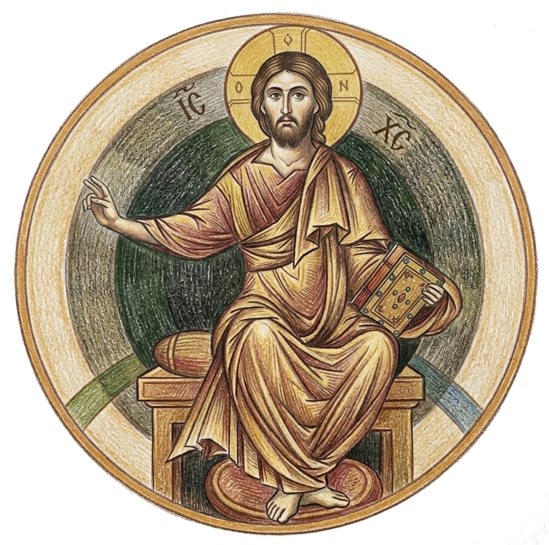
The Dismissal
And now it is time to return, to go back. For the time of this world has not yet come to its end. The hour of our own passage to the Father of all life has not yet arrived. And Christ sends us back, as witnesses of what we have seen, to proclaim His Kingdom and to continue His work. We must not fear: we are His people and His inheritance; He is in us and we are in Him. We will return into the world knowing that He is present.
- When he has done this he cleans the chalice so that it is totally dry and finally places the sponge inside, arranges the Holy Utensils, covers and binds them and the rest in their place. It is a great offense if the deacon or priest forgets to consume the Holy Gifts and leaves them in the chalice.” Mirković, Pravoslavna Liturgika, 122.
The Offertory
The Cherubim Hymn, the censing of the Altar and congregation, and the transfer of the eucharistic elements to the Altar (Great Entrance) constitute the first essential ‘movement’ of the Eucharist: the Offertory, which is the sacrificial act of the Church offering to God the oblation of our lives. We speak very often of the sacrifice of Christ, but so easily forget that the sacrifice of Christ requests and implies our own sacrifice, or rather our ‘uniting ourselves’ to the sacrifice of Christ, for we are His Body and partakers of His Life. A sacrifice is the natural movement of love, which is the gift of oneself, a self-denial for the sake of the Other. When I love somebody, my life is in him whom I love; I give him my life – freely, willingly, joyfully – and this ‘giving away’ becomes the very meaning of my life.